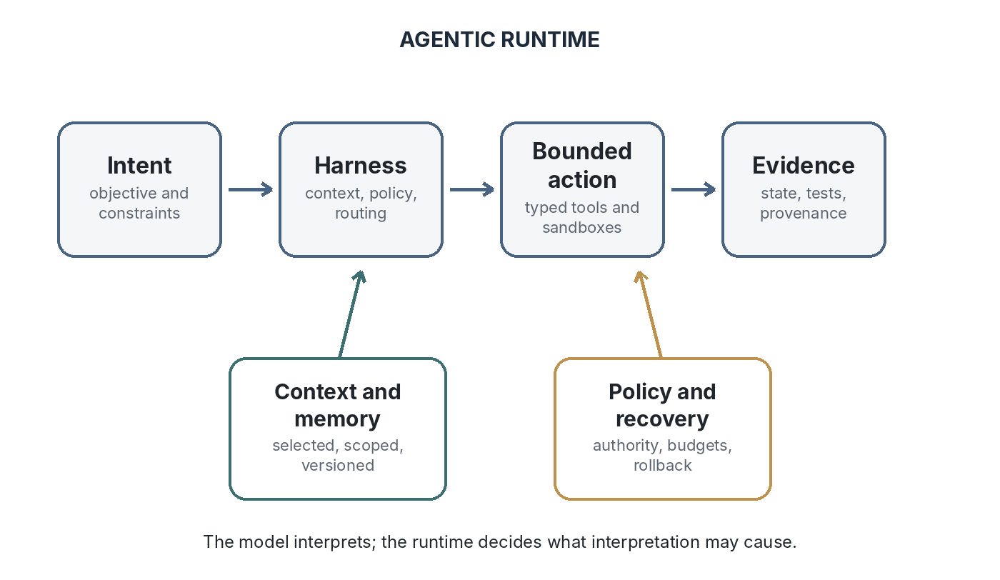
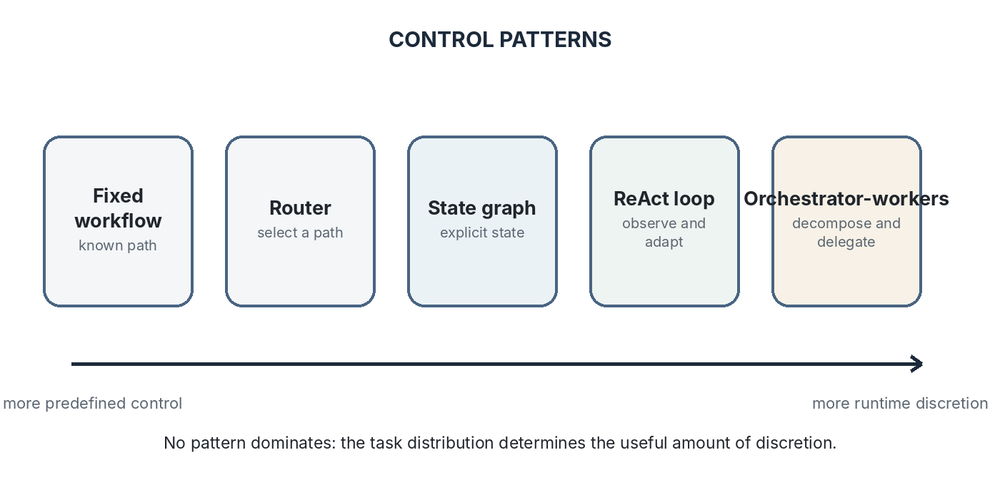
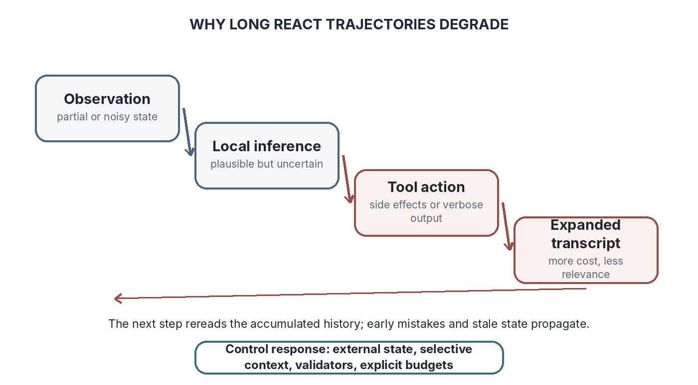
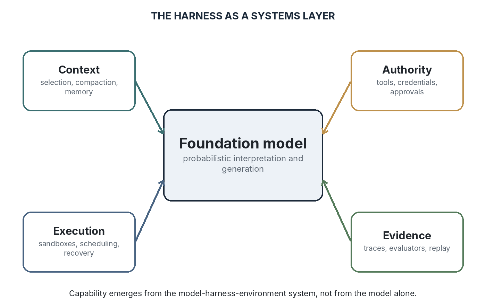
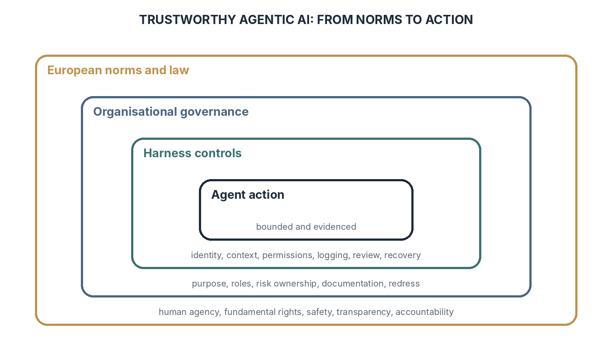
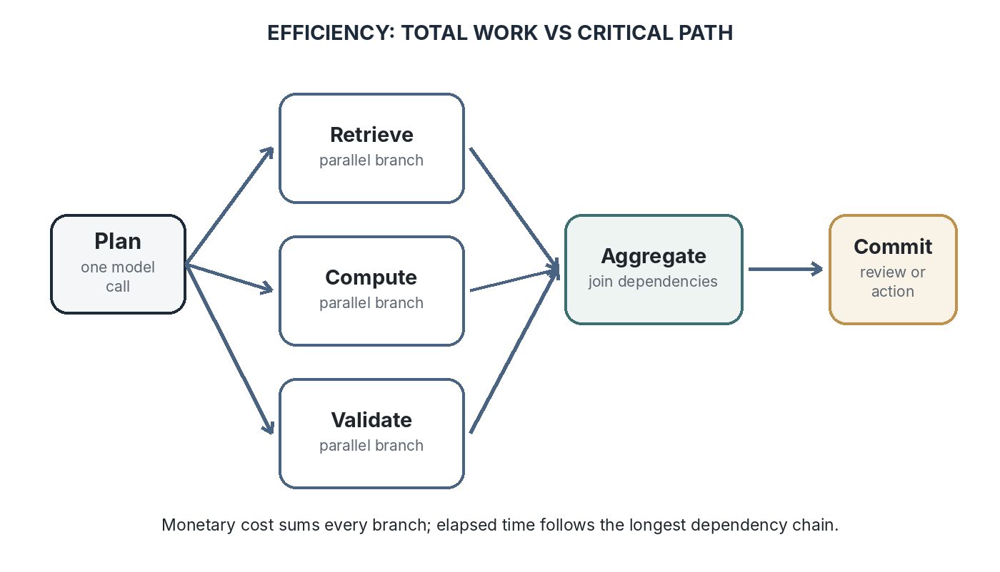
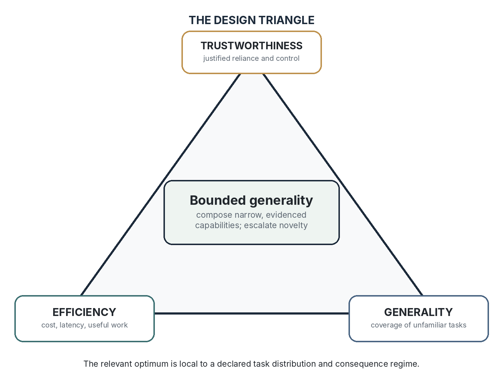
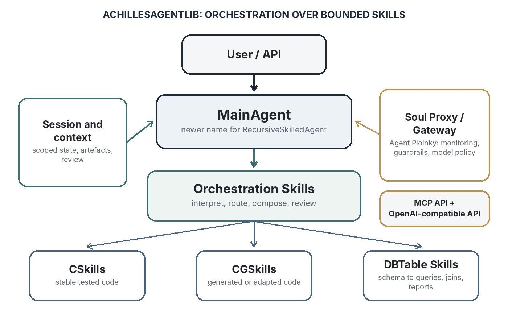
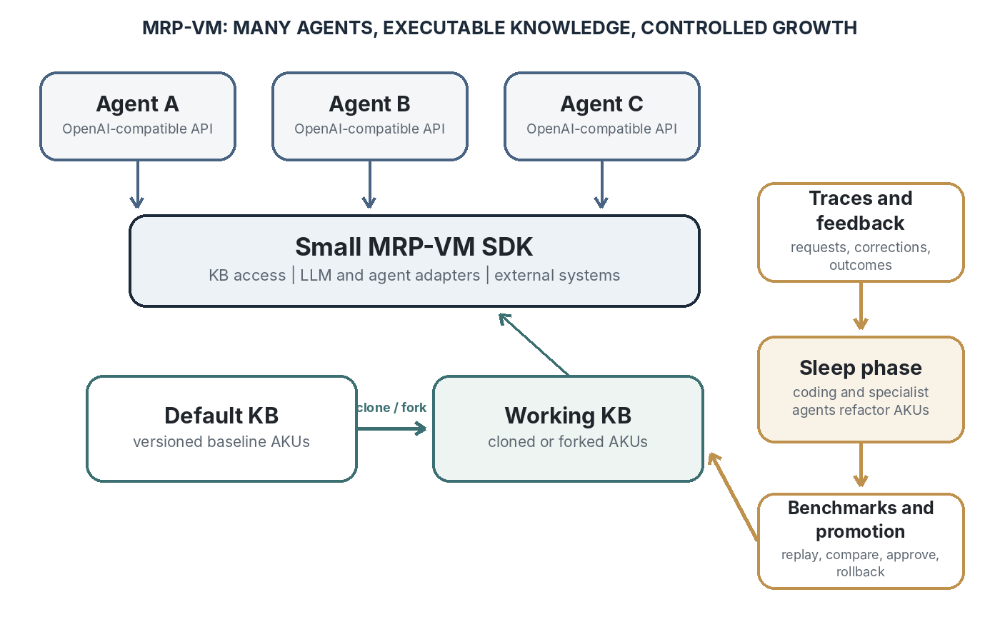
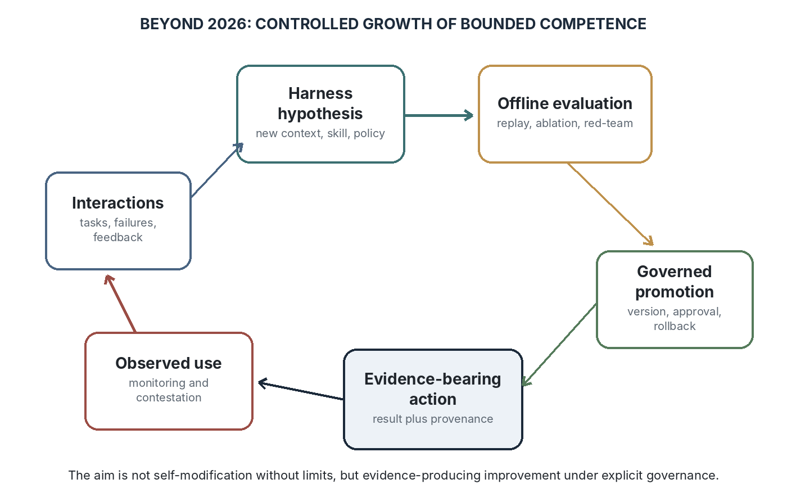

Tipare esențiale și dincolo de ele
Sînică Alboaie
ScriptaHub ScriptaHub PROIECT DE CERCETARE
Drepturi de autor © [2026] ScriptaHub Toate drepturile rezervate.
Drepturile de publicare KDP aparțin Outfinity SRL (Iași, România). Disponibilă gratuit pe site-ul ScriptaHub (ScriptaHub.com).
Nota autorului
Această lucrare a fost creată sub egida ScriptaHub, în cadrul a două programe de cercetare interconectate, unul dedicat inteligenței artificiale, iar celălalt outfinitismului, ambele conduse de Sînică Alboaie. Pentru a explora în detaliu felul în care aceste două programe se intersectează și se susțin reciproc, invităm cititorii să viziteze pagina Outfinity Venture Studio la www.outfinity.ch.
Deși modelele lingvistice de inteligență artificială au fost folosite pentru a sprijini generarea textului, filosofia de bază, structura tematică și abordarea analitică provin exclusiv din deceniile de studiu dedicat ale autorului asupra fenomenelor sociale, tehnologiilor sociale și tehnologiilor avansate propriu-zise, rezultate din diverse proiecte de cercetare europene și autofinanțate. Recent, în cadrul proiectului de cercetare ScriptaHub, am studiat aprofundat literatura generată de IA și verificarea sa automată prin abordări neurosimbolice; toate cărțile gratuite puse la dispoziția publicului fac parte din ansamblul de lucrări pe care îl folosim pentru a testa cele mai noi tehnologii ale noastre.
Această carte face parte din activitatea de cercetare asociată proiectului ScriptaHub - Învățare automată centrată pe om: mai suplă, mai clară, mai sigură, un proiect Orizont Europa finanțat prin Acordul de grant nr. 101189689. Proiectul cercetează inteligența artificială eficientă, conformă și de încredere, inclusiv dezvoltarea orientată spre specificații, interfețele de raționament transparente, mediile de execuție modulare și metodele de reducere a costurilor și riscurilor sistemelor avansate de IA. Interpretările și argumentele exprimate aici îi aparțin autorului și nu reprezintă neapărat Comisia Europeană, consorțiul ScriptaHub sau fiecare partener al proiectului.
Sistemele de IA generativă au fost utilizate substanțial pentru identificarea literaturii, compararea surselor, sinteză, critică, schițarea structurii, conceperea diagramelor, restructurare editorială și formulare lingvistică. Autorul a definit domeniul lucrării, a contribuit cu concepte specifice proiectului și cunoștințe de implementare, a selectat argumentele, a revizuit afirmațiile și și-a păstrat responsabilitatea pentru textul rezultat. Asistența IA nu implică faptul că sistemele externe susțin arhitecturile specifice proiectului descrise în capitolele Dincolo. Manuscrisul distinge dovezile publicate de interpretarea arhitecturală și de propunerile aflate în dezvoltare activă. Platformele industriale, standardele, prepublicările de cercetare și orientările europene de implementare se schimbă rapid; afirmațiile privind situația actuală sunt datate 23 iulie 2026, dacă nu se precizează altfel. Capitolele despre ScriptaHubAgentLib și MRP-VM descriu o direcție de cercetare și inginerie, nu pretind existența unei capacități de uz general deja finalizate.
| Capitol |
|---|
| PARTEA I: TIPARE ESENȚIALE |
| PARTEA A II-A: ÎNCREDERE, ECONOMIE ȘI PROIECTARE |
| PARTEA A III-A: DINCOLO |
Primul val de aplicații ale modelelor lingvistice mari a fost organizat în jurul prompturilor. Următorul val este organizat în jurul acțiunii delegate. Un model este plasat într-un mediu software în care poate căuta, apela servicii, scrie cod, opera asupra fișierelor, menține starea, cere ajutor altor agenți și continua până când este îndeplinită o condiție de oprire. Această schimbare este adesea condensată în cuvântul agent, însă elementul decisiv este mediul de execuție care repartizează autoritatea între modele, instrumente, sisteme de memorie, validatoare, evaluatori umani și instituții externe. În 2026, calitatea inginerească a acestui mediu de execuție determină tot mai mult dacă o demonstrație impresionantă a unui model devine un sistem fiabil. Cartea explică perspectiva mediului de execuție în trei etape. Prima organizează tiparele agentice esențiale și arată cum combină sistemele moderne utilizarea instrumentelor, planificarea, grafurile, memoria, reflecția și coordonarea multiagent. A doua le confruntă limitele, mai ales slăbiciunile structurale ale traiectoriilor ReAct lungi, contextele supradimensionate, execuția secvențială costisitoare, autocorectarea nesigură, localizarea slabă a defecțiunilor și incertitudinea evaluării. A treia examinează noul strat de infrastructură de control și dezvoltă un argument specific proiectului: ScriptaHubAgentLib și MRP-VM nu urmăresc să învingă ReAct la orice test de referință posibil, ci să identifice distribuții recurente de sarcini în care orchestrarea atent proiectată, cunoașterea executabilă, controlul contextului și îmbunătățirea guvernată pot produce o muncă mai rapidă și mai demnă de încredere.
Afirmația directoare este că IA agentică ar trebui proiectată ca o delegare limitată în condiții de incertitudine. Un sistem util trebuie să știe ce are voie să facă, ce informații sunt relevante, cum poate fi verificată o operație, când ar trebui ca o eroare să declanșeze remedierea și ce decizii trebuie să rămână umane. Încrederea justificată, eficiența și generalitatea nu pot fi discutate izolat. Ele formează un spațiu de proiectare în care arhitectura corectă depinde de sarcină, de consecințe și de dovezile disponibile. Așadar, cel mai bun agent nu este cel care pare maxim autonom. Este cel a cărui infrastructură de control transformă competența incertă a modelului în muncă utilă, păstrând controlul, explicația și posibilitatea corectării.
Capacitatea de acțiune începe atunci când limbajului generat i se permite să modifice
fluxul de control, starea sau lumea exterioară.
Un model lingvistic mare, luat separat, asociază unui context de intrare o distribuție a continuărilor posibile. Un sistem agentic adaugă un al doilea nivel de semnificație. Unele continuări sunt interpretate ca acțiuni: apelarea unei funcții, o interogare a unei baze de date, o operație în browser, o editare, un mesaj către alt agent, o solicitare de aprobare umană sau o decizie de a continua. Prin urmare, sistemul face mai mult decât să producă text. El controlează un proces. Diferența pare mică, deoarece interfața modelului poate arăta în continuare ca o casetă de chat, dar schimbă riscurile, economia și arhitectura aplicației. O propoziție greșită poate dezinforma un cititor; o acțiune greșită poate modifica date, cheltui bani, expune secrete sau crea un lanț de erori suplimentare.
Agentul contemporan poate fi înțeles cel mai bine ca o politică încorporată într-un mediu de execuție. Politica selectează acțiuni pe baza observațiilor. Mediul de execuție furnizează observațiile, restrânge spațiul acțiunilor, execută acțiunile autorizate, păstrează starea și decide cum revin rezultatele la model. În limbajul învățării prin întărire, modelul interacționează cu un mediu printr-o stare observată parțial. În limbajul ingineriei software, modelul este o componentă nedeterministă într-un sistem de control cu stare. Ambele descrieri sunt utile. Prima clarifică adaptarea și atribuirea contribuțiilor pe orizont lung; a doua clarifică tipurile, permisiunile, tranzacțiile, recuperarea după defecțiuni și testarea.
De aceea, arhitectura dominantă în producție în 2026 nu este o inteligență autonomă monolitică. Este un mediu de execuție orchestrat în jurul unuia sau mai multor modele fundamentale. Acesta include, de regulă, instrucțiuni, interfețe de instrumente cu tipuri definite, selectarea contextului, memorie de lucru și persistentă, un planificator de execuție sau o buclă, verificări ale politicilor, medii izolate, transferuri de control, trasare și evaluare. OpenAI, Anthropic, Google, Microsoft, LangChain, OpenHands și sistemele de cercetare mai noi diferă ca terminologie, dar converg asupra aceleiași perspective sistemice. OpenAI descrie acum o infrastructură de control nativă modelului și execuție nativă într-un mediu izolat; Anthropic tratează performanța pe termen lung ca pe o problemă de proiectare a infrastructurii de control; Google ADK prezintă agenți secvențiali, paraleli și în buclă, împreună cu trasare și mecanisme de control cu participare umană. Modelul rămâne central, deoarece interpretează intenții ambigue. Sistemul din jur determină ce poate vedea și provoca acea interpretare (Anthropic, 2026a; Google, 2026; OpenAI, 2026a).
Prin urmare, granița practică a capacității de acțiune nu este conștiința, personalitatea sau autodescrierea fluentă. Este controlul delegat. Un răspuns static augmentat prin recuperarea informațiilor poate fi sofisticat fără a fi puternic agentic, dacă aplicația fixează fiecare etapă de recuperare și sinteză. Un router care alege unul dintre mai multe fluxuri de lucru exercită deja o formă limitată de capacitate de acțiune, deoarece rezultatul modelului schimbă fluxul de control. O buclă ReAct exercită mai multă, deoarece alege în mod repetat instrumente ca răspuns la observații. Un agent de programare exercită și mai multă, deoarece poate remodela spațiul de lucru, rula teste și revizui propriul plan. Capacitatea de acțiune reprezintă un spectru al libertății de decizie în execuție, nu un prag metafizic.

Figura 1.1. Un agent de producție este un mediu de execuție stratificat în care modelul interpretează, iar infrastructura de control gestionează consecințele.
Arhitectura minimă utilă conține un obiectiv, un model, o interfață de acțiune, un canal de observație, o stare și o regulă de oprire. Obiectivul descrie rezultatul dorit și constrângerile relevante. Modelul propune următoarea operație. Interfața de acțiune traduce o propunere într-o operație autorizată, cu tip definit. Canalul de observație transformă rezultatele externe în context accesibil modelului. Starea păstrează ceea ce sistemul trebuie să rețină între pași. Regula de oprire decide când rezultatul este acceptabil, când s-a epuizat un buget sau când este necesară intervenția umană. Eliminați interfața de acțiune și sistemul devine un generator. Eliminați starea și devine o succesiune de presupuneri deconectate. Eliminați regula de oprire și devine o buclă nelimitată.
Sistemele de producție adaugă mai multe planuri de control în jurul acestui minim. Un gestionar de context decide ce instrucțiuni, amintiri, documente recuperate, rezultate anterioare și descrieri ale instrumentelor sunt vizibile la un anumit pas. Un registru de instrumente expune contracte stabile în locul codului arbitrar. Un planificator sau un router selectează un flux de lucru, un subobiectiv, un model ori un specialist. Un verificator controlează dacă operația a respectat politicile și dacă rezultatul pretins este susținut de mediu. O urmă de execuție înregistrează ce s-a întâmplat, cu suficiente versiuni și informații de proveniență pentru a reproduce sau diagnostica procesul. Un strat de supraveghere umană rezervă deciziile care nu ar trebui delegate sau oferă o cale de escaladare atunci când încrederea automată este insuficientă.
Fiecare dintre aceste componente compensează o limitare specifică. Gestionarea contextului compensează atenția finită și erorile de relevanță. Instrumentele cu tipuri definite compensează ambiguitatea limbajului liber. Planificarea compensează alegerea miopă a pasului următor. Verificarea compensează halucinațiile și încheierea prematură. Trasarea compensează nedeterminismul și explicațiile ulterioare slabe. Supravegherea umană compensează incapacitatea unui evaluator automat de a reprezenta fiecare considerent juridic, etic sau organizațional. Arhitectura nu constituie o complexitate accidentală. Este o structură cognitivă și de guvernanță externă, construită în jurul unui interpret probabilist.
Rezultă o distincție utilă între instrumente și competențe procedurale, deși vocabularul nu este încă standardizat. Un instrument este, de obicei, o capacitate executabilă atomică, precum citirea unui fișier, apelarea unui API sau executarea unei interogări. O competență procedurală este o capacitate procedurală reutilizabilă care grupează instrucțiuni, resurse, ipoteze de control și, uneori, cod sau evaluare. În industrie, competențele clasice Agent Skills apar adesea ca dosare portabile de instrucțiuni, scripturi și materiale auxiliare, pe care un agent generalist le încarcă atunci când sunt relevante. În această carte, termenul este folosit generic până la Capitolul 8, unde ScriptaHubAgentLib introduce o taxonomie mai specifică: competențele de orchestrare coordonează trei familii executabile cu semantici distincte. Tranziția importantă este de la expunerea acțiunilor brute la stabilizarea competenței recurente.
Tabelul 1.1. Mediul de execuție agentic ca repartizare a responsabilităților.
| Element al mediului de execuție | Responsabilitate principală |
|---|---|
| Obiectiv și specificație | Definirea rezultatului dorit, a constrângerilor, acceptării și escaladării |
| Element al mediului de execuție | Responsabilitate principală |
|---|---|
| Model sau portofoliu de modele | Interpretarea ambiguității, propunerea acțiunilor și generarea artefactelor |
| Context și memorie | Selectarea stării relevante, păstrarea provenienței și controlul retenției |
| Instrumente și interpreți | Executarea operațiilor cu tipuri definite prin cod, API-uri, baze de date sau rezolvitoare |
| Planificator de execuție și stare | Controlul secvențierii, dependențelor, punctelor de control și opririi |
| Dovezi și guvernanță | Verificarea rezultatelor, trasarea autorității, sprijinirea revizuirii, recuperării și remedierii prejudiciilor |
Esența arhitecturii agentice este delegarea limitată în condiții de incertitudine. Delegarea este necesară deoarece un model general poate interpreta situații care nu au fost enumerate în prealabil. Limitele sunt necesare deoarece aceeași generalitate face comportamentul său greu de anticipat. Incertitudinea este ireductibilă deoarece modelul, mediul, intenția utilizatorului, dovezile recuperate și evaluatorul pot fi toate incomplete. Prin urmare, o arhitectură serioasă pune trei întrebări la fiecare graniță: ce libertate de decizie este delegată, ce dovezi constrâng decizia și ce recuperare rămâne posibilă dacă decizia este greșită.
Această perspectivă explică de ce agenți aparent similari pot avea proprietăți de încredere radical diferite. Un asistent de călătorie care schițează un itinerar are o libertate interpretativă amplă, dar autoritate limitată. Același asistent conectat la un instrument de plată are un profil de risc diferit, chiar dacă promptul rămâne neschimbat. Un agent de programare aflat într-un mediu izolat temporar poate explora îndrăzneț deoarece revenirea la starea anterioară este ieftină. Același agent cu acreditări de producție necesită izolarea modificărilor, teste, aprobări și semantică tranzacțională. Caracterul demn de încredere nu este o proprietate a numelui modelului. Este o proprietate a întregului aranjament de delegare, inclusiv autoritatea, mediul, observabilitatea și remedierea prejudiciilor.
Această perspectivă corectează ideea că o autonomie mai mare înseamnă întotdeauna progres. Autonomia este utilă atunci când acoperă variații semnificative fără să distrugă garanțiile. Este dăunătoare atunci când înlocuiește un flux de lucru explicit, ieftin și verificabil cu o secvență costisitoare de alegeri opace. Obiectivul proiectării este cea mai mică libertate de decizie adaptivă care acoperă distribuția declarată a sarcinilor. Anthropic distinge fluxurile de lucru, ale căror trasee sunt predefinite, de agenți, al căror proces este ales dinamic, și recomandă creșterea complexității doar atunci când compozițiile mai simple sunt insuficiente. Același principiu motivează direcția ScriptaHub: păstrarea unei căi de tip ReAct pentru probleme cu adevărat deschise, dar proiectarea unor căi mai restrânse atunci când dovezile repetate arată că pot fi mai rapide, mai ieftine și mai ușor de considerat de încredere (Anthropic, 2024).
Rezultă un vocabular mai precis pentru restul cărții. Un flux de lucru este o structură de control explicită în care modelele pot acoperi lacune semantice locale. Un agent este un mediu de execuție în care deciziile modelului pot schimba ordinea sau selecția operațiilor. Un sistem multiagent distribuie aceste decizii între actori specializați. Infrastructura de control a unui agent este cadrul software care furnizează stare, instrumente, permisiuni, planificarea execuției, memorie, trasare și recuperare. O infrastructură de evaluare este infrastructura care execută sarcini, înregistrează traiectorii și medii, aplică evaluatori și agregă dovezi. Modelul fundamental furnizează competența generativă; infrastructura de control transformă această competență într-un sistem operațional.
Evoluția din 2022 până în 2026 poate fi citită ca o migrare a inteligenței din textul prompturilor în structura sistemului. Promptarea prin lanțuri de raționament a arătat că limbajul de raționament intermediar poate îmbunătăți multe sarcini. Toolformer, apelarea funcțiilor și ReAct au conectat generarea la acțiunea externă. Căutarea în arbore, reflecția, memoria și munca multiagent au extins bucla. Sistemele de producție au externalizat apoi starea în grafuri, sesiuni, puncte de control, medii izolate, filtre de politici și suite de evaluare. Până în 2026, cercetarea numește explicit infrastructura de control drept substrat de execuție ale cărui responsabilități includ specificarea sarcinilor, selectarea contextului, accesul la instrumente, starea, observabilitatea, verificarea, permisiunile și înregistrarea intervențiilor (Wei et al., 2022; Schick et al., 2023; Yao et al., 2023a; Zhong and Zhu, 2026).
Lecția decisivă nu este că un anumit tipar a câștigat. Este că comportamentul modelului devine util atunci când alegerile intermediare sunt suficient de explicite pentru a fi gestionate. În 2023, domeniul se întreba dacă un model lingvistic poate acționa. În 2026, întrebările serioase sunt dacă o acțiune poate fi autorizată, observată, reprodusă, evaluată ca preț, verificată, anulată și atribuită. De aceea, trasarea și evaluarea au trecut de la auxiliare de depanare la primitive arhitecturale. Tot de aceea contează protocoalele MCP și Agent-to-Agent: ele standardizează interfețele dintre modele, instrumente, resurse și alți agenți, lăsând încrederea, identitatea și politicile în seama sistemului care le încadrează.
Schimbarea nu face promptarea irelevantă. Instrucțiunile rămân politici executabile exprimate în limbaj natural. Ea face din promptare un strat între mai multe și transformă selectarea contextului într-o decizie de proiectare de prim rang. Un sistem robust tratează instrucțiunile ca material de program cu versiuni, limitează operațiile pe care le pot declanșa, înregistrează modelul și dovezile care le-au executat și oferă interpreți alternativi atunci când limbajul natural este substratul nepotrivit. Problema de frontieră nu este doar cum să încapă mai mulți tokeni. Este cum să fie expus contextul minim suficient fără a șterge nuanța care schimbă acțiunea corectă.
Restul cărții dezvoltă această poziție. Capitolul 2 organizează tiparele esențiale. Capitolul 3 explică unde cedează modelele lingvistice și buclele de tip ReAct. Capitolul 4 descrie ingineria infrastructurii de control ca nou strat sistemic. Capitolele 5 până la 7 leagă IA de încredere, eficiența economică și generalitatea. Capitolele 8 și 9 prezintă ScriptaHubAgentLib și MRP-VM ca două încercări înrudite, dar distincte, de stabilizare a competenței recurente, fără pretenția de a construi un agent care este cel mai bun la toate. Capitolul 10 încheie cu o agendă pentru sisteme purtătoare de dovezi, care se pot îmbunătăți prin evaluare controlată.
Tiparele nu sunt religii concurente. Ele sunt structuri de control
limitate, care ar trebui combinate în funcție de incertitudinea
sarcinii.
Majoritatea agenților contemporani pot fi înțeleși ca îmbinări ale unui mic set de tipare de control recurente. Un model augmentat primește recuperare de informații, instrumente și memorie. Un flux de lucru descompune munca într-o secvență cunoscută. Un router alege între trasee. Un graf stochează starea și dependențele în afara transcrierii. O buclă ReAct se adaptează observațiilor pas cu pas. Un planificator-executor separă descompunerea globală de acțiunea locală. Buclele evaluator-optimizator adaugă critică explicită, iar sistemele multiagent distribuie munca sau judecata. Aceste tipare nu sunt identități sau produse; sunt modalități de repartizare a libertății de decizie, stării și verificării.
Înlănțuirea prompturilor este tiparul cel mai conservator. Fiecare etapă are un scop stabil și transmite un rezultat limitat etapei următoare. Funcționează bine atunci când ordinea dependențelor este cunoscută și când erorile pot fi verificate la granițele etapelor. Procesarea documentelor, pregătirea conformității, transformarea datelor și generarea rapoartelor beneficiază adesea de această structură. Tiparul reduce căutarea, deoarece arhitectura furnizează planul. Limita lui este rigiditatea atunci când forma sarcinilor variază: un lanț fix fie conține pași nefolosiți, fie nu are o ramură pentru un caz neprevăzut. În asemenea situații, rutarea poate selecta între mai multe lanțuri fără a acorda modelului control deplin asupra procesului.
Rutarea transformă clasificarea într-o primitivă arhitecturală. Un router asociază unei cereri sau unei stări intermediare un model, un instrument, o competență procedurală sau un specialist. Routerul poate fi un LLM, un clasificator mai mic, un motor de reguli, o procedură de recuperare sau un hibrid. Rutarea este valoroasă deoarece nu fiecare sarcină merită cel mai puternic model sau cele mai largi permisiuni. O cerere simplă poate ajunge la un model local ieftin; o cerere ambiguă poate ajunge la un model de frontieră; o operație reglementată poate ajunge la un flux de lucru determinist cu revizuire obligatorie. Aceasta este deja o formă timpurie de amestec de experți la nivel de sistem. Modul său de eșec este clasificarea greșită, așa că rutarea sigură necesită o cale de rezervă, praguri de încredere și motive vizibile.
Paralelizarea schimbă economia descompunerii. Subsarcinile independente pot fi executate concomitent, reducând latența pe calea critică. De asemenea, pot fi generate în paralel mai multe soluții candidate și apoi comparate, îmbunătățind fiabilitatea cu un cost suplimentar. Cele două utilizări nu trebuie confundate. Împărțirea muncii urmărește debitul; eșantionarea urmărește diversitatea. Ambele necesită un agregator care știe să combine rezultatele și să detecteze contradicțiile. Fără o regulă de agregare bazată pe principii, paralelismul produce doar mai mult material fluent. Skeleton-of-Thought și LLMCompiler demonstrează că forma orchestrării poate schimba substanțial latența și costul chiar și atunci când modelul de bază rămâne neschimbat (Ning et al., 2023; Kim et al., 2024).

Figura 2.1. Tiparele agentice alocă grade diferite de control structurii predefinite și libertății de decizie a modelului în execuție.
ReAct rămâne cel mai influent tipar minimal pentru agenții care folosesc instrumente. Modelul alternează raționamentul, acțiunea și observația până când produce un răspuns sau atinge o limită. Tiparul este puternic deoarece ancorează limbajul în feedbackul mediului și permite ca pasul următor să depindă de cea mai recentă observație. Este și ușor de implementat, deoarece transcrierea servește totodată ca stare de control. ReAct rămâne o opțiune implicită solidă pentru navigarea în medii necunoscute, diagnosticarea exploratorie și sarcinile ale căror dependențe nu pot fi anticipate. Importanța sa nu trebuie confundată cu optimalitatea universală: aceeași proiectare centrată pe transcriere devine o vulnerabilitate când sarcinile sunt lungi, repetitive, costisitoare sau constrânse de politici (Yao et al., 2023a).
O arhitectură planificator-executor separă descompunerea globală de acțiunea locală. Planificatorul creează o secvență sau un graf de dependențe ale subobiectivelor; executanții îndeplinesc aceste subobiective; un agregator sau verificator compune rezultatul. Separarea reduce tendința unui agent secvențial de a improviza local fără a păstra obiectivul global. Ea expune și oportunități de execuție paralelă și rutare selectivă a modelelor. Slăbiciunea este că planurile se învechesc. O eroare timpurie de planificare poate coordona eficient sistemul în direcția greșită. Implementările eficace tratează, prin urmare, planurile ca ipoteze revizuibile, nu ca scripturi imuabile.
Mediile de execuție bazate pe grafuri generalizează atât fluxurile de lucru fixe, cât și sistemele planificator-executor. Nodurile reprezintă apeluri de modele, instrumente, oameni, validatoare sau subgrafuri; muchiile codifică dependențele de control și de date; starea durabilă există în afara conversației. Grafurile susțin ramuri deterministe, bucle, puncte de control, ramificare paralelă, transferuri de control și recuperare selectivă. LangGraph, Google ADK, Microsoft Agent Framework și sisteme de cercetare precum LLMCompiler ilustrează această convergență. Câștigul nu constă în primul rând în programarea vizuală. Constă în separarea stării procesului de proza care o descrie întâmplător, ceea ce îmbunătățește localizarea defecțiunilor și permite reconstruirea contextului dintr-o stare cu elemente denumite, în locul reluării integrale.
Orchestrator-executant este un tipar înrudit pentru sarcini ale căror subsarcini nu pot fi enumerate în prealabil. Un orchestrator stabilește ce muncă este necesară, o deleagă executanților, apoi sintetizează rezultatele. Sistemele de cercetare aprofundată folosesc acest tipar când generează interogări, trimit cercetători pe ramuri diferite de dovezi și reconciliază constatările. Sistemele de programare îl folosesc când atribuie explorarea depozitului, implementarea și testarea unor contexte diferite. Tiparul este mai adaptiv decât un graf fix, dar mai disciplinat decât un singur agent căruia i se permite să poarte fiecare responsabilitate într-o singură transcriere în creștere.
Tabelul 2.1. Tipare de control de bază și domeniile lor firești de operare.
| Tipar | Cea mai potrivită utilizare arhitecturală | ||
|---|---|---|---|
| Lanț de prompturi | Transformări ordonate stabile, cu verificări explicite la fiecare graniță. | ||
| Router | Distribuire între modele, competențe procedurale, politici sau fluxuri de lucru, în funcție de tipul cazului. | ||
| Buclă ReAct | Interacțiune deschisă în care acțiunea următoare depinde de observații noi. | ||
| Planificator-executor | Sarcini lungi care beneficiază de descompunere globală și executanți locali. | ||
| Graf de stare | Fluxuri de lucru persistente, cu ramificare, puncte de control, recuperare și tipuri mixte de noduri. | ||
| Orchestrator-executant | Descompunere dinamică în pachete de lucru specializate, potențial paralele. |
Tiparul evaluator-optimizator separă generarea de critică. O componentă produce un răspuns sau un artefact; alta îl verifică după criterii și solicită revizuirea. Evaluatorul poate fi un test determinist, un validator de schemă, un demonstrator de teoreme, un al doilea model sau un om. Acest tipar este cel mai util când calitatea poate fi formulată, dar nu poate fi obținută într-o singură trecere. Traducerea, programarea, redactarea politicilor și sinteza cercetării se încadrează adesea în acest profil. Puterea lui vine din rolurile diferențiate. Slăbiciunea apare când generatorul și evaluatorul au același punct orb sau când evaluatorul recompensează conformitatea superficială cu un indicator substitutiv.
Reflecția adaugă feedback lingvistic persistent. Reflexion a arătat că un agent poate stoca în memoria episodică critici ale traiectoriilor eșuate și le poate folosi pentru a îmbunătăți încercările ulterioare fără schimbarea ponderilor modelului. Ideea este atractivă deoarece transformă experiența în îndrumare reutilizabilă. Totuși, reflecția nu înseamnă autovalidare. Un model poate produce o explicație convingătoare, dar falsă, a propriului eșec. Reflecția devine fiabilă numai când este ancorată în dovezi externe, precum teste, starea mediului, corecții umane sau contraexemple. Întrebarea arhitecturală relevantă nu este dacă agentul poate vorbi despre greșeala sa, ci dacă înregistrarea din memorie și-a câștigat promovarea în contextul viitor (Shinn et al., 2023).
Tree of Thoughts și Language Agent Tree Search extind raționamentul secvențial în căutare deliberată. Stările candidate se ramifică; evaluatorii le punctează; sistemul explorează, revine sau revizuiește. Aceste tipare pot îmbunătăți rezolvarea problemelor cu feedback rar sau structură combinatorie. Ele multiplică însă costul inferenței și pot crea o iluzie de rigoare când fiecare ramură este produsă și evaluată de modele corelate. Căutarea este valoroasă când reprezentarea stării, operatorul de tranziție și evaluatorul disting ipoteze cu adevărat diferite. Este risipitoare când ramurile sunt parafraze, iar regula de punctare recompensează aceleași semnale stilistice care le-au generat (Yao et al., 2023b; Zhou et al., 2024).
Rezultă o ierarhie practică a verificării. Ori de câte ori un rezultat poate fi verificat prin cod executabil, o constrângere a bazei de date, un sistem de tipuri sau un rezolvitor formal, acea verificare externă ar trebui să prevaleze asupra autocriticii modelului. Când este posibilă doar formalizarea parțială, recuperarea independentă de informații, implementările alternative, testele adversariale și evaluatorii de tip model calibrați pot adăuga dovezi. Revizuirea umană nu ar trebui folosită ca un clic final ceremonial; ar trebui rezervată deciziilor care implică importanță, valori, dovezi ambigue sau autoritate ireversibilă. Arhitectura ar trebui să facă vizibil tipul verificării, în loc să reducă fiecare control la un scor generic de încredere.
Memoria este adesea descrisă ca o trăsătură care face agenții mai asemănători oamenilor. O descriere mai utilă este că memoria reprezintă stare cu o politică de retenție. Memoria de lucru conține variabilele necesare execuției curente. Memoria episodică stochează traiectorii sau rezumate anterioare. Memoria semantică stochează cunoaștere reutilizabilă. Memoria procedurală stochează competențe procedurale, prompturi, cod și reguli de flux de lucru. Memoria personală sau organizațională stochează preferințe, permisiuni și context de lungă durată. Aceste categorii diferă prin proveniență, frecvența actualizării și risc; ele nu ar trebui contopite într-o singură bază de date vectorială.
Agenții augmentați prin recuperarea informațiilor interoghează corpusuri externe în timpul execuției. Recuperarea reduce dependența de cunoașterea parametrică și susține informații actuale sau private, dar introduce decizii noi: ce trebuie indexat, cum se face recuperarea, cum se stabilește ordinea relevanței, ce se citează și cum se asigură apărarea împotriva conținutului malițios. Sistemele de recuperare ierarhică precum RAPTOR și abordările de memorie virtuală precum MemGPT arată că arhitectura memoriei poate schimba performanța pe orizont lung. Problema centrală nu este capacitatea de stocare. Este relevanța în condițiile unui context limitat și păstrarea statutului sursei (Sarthi et al., 2024; Packer et al., 2023).
Agenții cu execuție îndelungată au nevoie și de compactare. O transcriere care conține fiecare gând, schemă de instrument, observație și reîncercare devine în cele din urmă costisitoare și dificil de folosit pentru model. Rezumarea reduce dimensiunea, dar poate șterge constrângeri care devin importante ulterior. Prin urmare, sistemele bune de memorie păstrează stare structurată alături de rezumate: variabile denumite, întrebări nerezolvate, legături de proveniență, angajamente și puncte de control ale mediului. Sistemul ar trebui să știe ce fapte pot fi reconstruite din sursă, ce concluzii sunt provizorii și ce instrucțiuni au autoritate.
Memoria creează o graniță de securitate. Documentele recuperate pot conține injecții indirecte de prompt. O notă persistentă poate fi otrăvită astfel încât o sesiune ulterioară să trateze o instrucțiune adversarială ca pe o cunoaștere de încredere. O preferință învechită poate intra în conflict cu o politică nouă. Un rezumat poate transforma pe nesimțite incertitudinea în fapt. Igiena memoriei necesită, așadar, spații de stocare cu domeniu delimitat, înregistrări tipizate, identitatea sursei, expirare, tratarea conflictelor și promovare explicită. Acesta este unul dintre motivele pentru care capitolul ulterior despre MRP-VM tratează trecerea de la un rezultat tranzitoriu la cunoaștere reutilizabilă ca pe o operație guvernată, nu ca pe un efect secundar automat.
Arhitecturile de transfer al controlului organizează specializarea. Un agent de triere interpretează cererea și transferă controlul unui specialist ale cărui instrumente, instrucțiuni și permisiuni sunt mai restrânse. Specialistul poate returna un rezultat sau transmite sarcina mai departe. Aceasta seamănă cu delegarea organizațională și este acum un concept de prim rang în mai multe SDK-uri. Transferurile reduc aglomerarea prompturilor și instrumentelor deoarece fiecare agent vede o suprafață de competență mai mică. Ele creează și întrebări de coordonare: ce stare însoțește sarcina, cine răspunde de răspunsul final, cum se rezolvă conflictele și cum este împiedicată extinderea autorității prin delegare.
Sistemele multiagent extind această idee către cooperare, dezbatere, simulare sau rezolvare distribuită a problemelor. Agenții pot avea roluri, modele, acces la date sau evaluatori diferiți. Atracția este clară: specializarea și diversitatea pot reduce punctele oarbe individuale. Realitatea empirică este mai condiționată. Interacțiunea multiagent adaugă mesaje, latență, costuri și moduri de eșec care implică roluri neclare, convingeri inconsecvente, muncă duplicată, consens prematur și discuții fără sfârșit. Taxonomiile recente ale eșecurilor arată că atât coordonarea, cât și verificarea pot eșua chiar și atunci când fiecare componentă pare competentă individual (Guo et al., 2024; Cemri et al., 2025).
Cel mai puternic caz de utilizare a mai multor agenți este independența structurală. Un agent poate genera în timp ce altul folosește un lanț diferit de instrumente pentru verificare. Mai mulți executanți pot explora în paralel surse de dovezi cu adevărat separabile. Un supraveghetor poate impune bugetul și reconcilia rezultatele. Cel mai slab caz de utilizare este jocul de rol teatral în care modele identice primesc etichete diferite și conversează fără dovezi sau autoritate distincte. Prezența mai multor voci nu înseamnă prezența mai multor cunoștințe.
Tiparele esențiale pot fi acum rezumate ca o gramatică de proiectare. Folosiți lanțuri fixe acolo unde traseul este cunoscut. Folosiți rutarea când clasele de sarcini diferă. Folosiți ReAct când observațiile trebuie să ghideze pasul următor. Folosiți planuri și grafuri când dependențele contează. Folosiți executanți paraleli când munca este separabilă. Folosiți evaluatori când criteriile de calitate pot fi externalizate. Folosiți memorie când starea trebuie să persiste, dar guvernați promovarea și recuperarea. Folosiți mai mulți agenți doar atunci când specializarea sau independența are semnificație operațională. Selectarea tiparelor este o decizie empirică de inginerie, nu un vot pentru sau împotriva autonomiei.
O buclă poate extinde raza de acțiune a unui model fără a repara
epistemologia modelului.
Modelele lingvistice sunt mașini remarcabil de capabile în prelucrarea tiparelor, dar obiectivul lor generativ nu garantează corespondența cu lumea. Ele pot produce fapte nesusținute, citări plauzibile, stări intermediare incorecte și descrieri încrezătoare ale unor operații care nu au fost niciodată finalizate. Într-un asistent convențional, aceste eșecuri rămân în stratul conversațional. Într-un agent, aceeași incertitudine se mută în control. O afirmație halucinată poate deveni o interogare de căutare; o presupunere greșită poate selecta un instrument; un parametru incorect poate modifica o înregistrare; o interpretare falsă a rezultatului unui instrument poate declanșa acțiunea următoare. Capacitatea de acțiune schimbă topologia erorii deoarece rezultatele revin ca intrări viitoare.
Cel mai important eșec nu este, așadar, o halucinație izolată. Este propagarea. Să presupunem că un agent identifică greșit un client, recuperează contul greșit, interpretează incorect o excepție de politică și apoi scrie o notă de remediere. Fiecare pas local poate părea coerent. Traiectoria globală este greșită deoarece starea inițială era greșită. Probabilitatea succesului complet într-o sarcină lungă este limitată de fiabilitatea fiecărei tranziții critice. Chiar și o eroare modestă la fiecare pas poate produce o rată redusă de succes integral când sarcinile necesită zeci de acțiuni dependente. De aceea, rezultatele testelor de referință care par respectabile la nivelul apelurilor de instrumente se pot prăbuși în procese de afaceri lungi.
Mediile reale sunt și ele parțial observabile. Modelul primește rareori starea completă a unui browser, sistem de operare, depozit, organizații sau proces juridic. El primește o proiecție: un arbore de accesibilitate, o captură de ecran, fișiere selectate, un răspuns API sau un rezumat. Starea ascunsă poate include tranzacții anterioare, condiții de control al accesului, actualizări asincrone, excepții de politică sau consecințe care apar abia ulterior. Un agent poate fi consecvent intern cu observația sa și totuși să acționeze incorect în mediul real. Un raționament mai lung nu dezvăluie o stare care nu a fost niciodată observată.
Testele de referință expun această discrepanță. WebArena a raportat o diferență mare între agenții de referință și performanța umană la sarcini web realiste. OSWorld a constatat o discrepanță similară pentru interacțiunea generală cu calculatorul. TheAgentCompany a arătat că sarcinile profesionale lungi care implică comunicare, software și aplicații de birou rămâneau dificile, cel mai puternic sistem de referință finalizând doar o minoritate a sarcinilor. Tau-bench a demonstrat în plus că succesul se deteriorează la încercări repetate: un agent care finalizează ocazional o sarcină cu multe politici poate fi nesigur când i se cere să o facă în mod consecvent (Zhou et al., 2023; Xie et al., 2024; Xu et al., 2024; Yao et al., 2024).

Figura 3.1. O traiectorie ReAct lungă poate transforma observația parțială într-o transcriere în expansiune, costisitoare și tot mai ambiguă.
Lanțurile de raționament și ReAct expun limbaj intermediar care poate îmbunătăți performanța și face traiectoriile mai ușor de inspectat. Este tentant să tratăm acest limbaj ca pe o transcriere fidelă a calculului care a produs răspunsul. Dovezile nu justifică această interpretare. Modelele pot fi influențate de indicii pe care nu le menționează, pot produce raționalizări după alegerea unui răspuns și pot oferi explicații diferite pentru aceeași tendință internă. Cercetările privind lanțurile de raționament nefidele au arătat că raționamentul declarat al unui model poate omite influența reală a caracteristicilor care introduc părtinire (Turpin et al., 2023). Urma este text generat cu valoare operațională; nu este acces direct la o demonstrație internă stabilă.
Acest lucru contează pentru ReAct deoarece tiparul acordă textului gândirii un rol privilegiat. Gândirea selectează o acțiune, iar transcrierea completă poate fi folosită ulterior pentru depanare, memorie sau explicație. Dacă gândirea nu este fidelă, urma poate documenta în continuare ce a spus agentul înainte de a acționa, dar nu poate garanta de ce modelul a preferat acțiunea. Este telemetrie de proces, nu o descriere cauzală a calculului neuronal. Încrederea ar trebui, așadar, să se bazeze pe intrări observabile, acțiuni autorizate, rezultate în mediu și validare externă, nu pe elocvența urmei de raționament.
Presupunerea că mai mult raționament este automat mai bun este și ea instabilă. The Curse of Chain-of-Thought raportează situații de învățare în context bazată pe tipare în care raționamentul explicit are rezultate mai slabe decât răspunsul direct, pe mai multe modele și teste de referință. Experimentele Apple Illusion of Thinking susțin că modelele de raționament pot înregistra o degradare abruptă pe măsură ce crește complexitatea controlată a problemelor, chiar și când generează urme mai lungi. Asemenea rezultate nu dovedesc că urmele de raționament sunt inutile. Ele arată că lungimea urmei și fiabilitatea cognitivă sunt variabile diferite. Un sistem poate cheltui mai mulți tokeni elaborând abstracția greșită.
Autocorectarea are limite înrudite. Fără feedback extern, modelele nu reușesc adesea să diagnosticheze și să repare fiabil propriul raționament. O a doua trecere poate îmbunătăți stilul sau surprinde inconsecvențe simple, dar poate și consolida răspunsul inițial ori introduce erori noi. Feedbackul extern schimbă situația deoarece adaugă informații: un test eșuat, o sursă contradictorie, rezultatul unui rezolvitor sau o corecție umană. Din perspectivă arhitecturală, distincția este fundamentală. Reflecția ar trebui să consume dovezi, nu doar mai multe eșantioane din aceeași stare incertă de convingeri (Huang et al., 2023).
Modelele lingvistice mari pot produce planuri impresionante în proză. Sunt mult mai puțin fiabile când trebuie să mențină un plan corect în prezența stării ascunse, a constrângerilor și a orizonturilor lungi. PlanBench și investigațiile ulterioare au constatat că modelele aveau dificultăți cu planificarea clasică, chiar și atunci când problemele erau exprimate în limbaj natural și existau exemple superficial similare. Eșecul nu este surprinzător. Predicția următorului token poate imita discursul planificării fără a implementa o procedură completă de căutare, un model de tranziție a stării sau un verificator de invariante. Un plan poate suna coerent strategic, deși conține o precondiție imposibilă sau omite o resursă necesară (Valmeekam et al., 2023, 2024).
Planificarea agentică îmbină cel puțin patru probleme. Sistemul trebuie să deducă obiectivul real al utilizatorului, să descompună obiectivul, să selecteze cunoștințele și instrumentele relevante și să ordoneze operațiile după dependențe și observații în schimbare. Aceste probleme sunt adesea comprimate într-un singur prompt. Un model poate reuși descompunerea și eșua la selectarea instrumentelor. Poate selecta un instrument corect și furniza argumente incorecte. Poate crea un plan inițial rezonabil și să nu-l revizuiască după ce mediul contrazice o presupunere. Evaluarea exclusivă a răspunsului final ascunde competența care a eșuat.
Comportamentul pe orizont lung este deosebit de fragil deoarece agentul trebuie să păstreze angajamente pe parcursul multor pași. SokoBench, conceput în jurul planificării de tip Sokoban, raportează degradare puternică dincolo de lungimi moderate ale soluțiilor. Testele de referință pentru utilizarea calculatorului arată că agenții pot efectua operații individuale în interfață, dar nu reușesc să susțină un progres coerent în sarcini care folosesc mai multe aplicații. În ingineria software, agenții sunt mai puternici deoarece depozitele oferă teste executabile și interfețe text relativ curate; chiar și acolo, performanța depinde substanțial de interfața agent-calculator și de infrastructura de control, nu doar de cunoștințele de programare ale modelului (Yang et al., 2024).
Răspunsul corect nu este abandonarea planificării prin modele. Este reducerea a ceea ce planificarea trebuie să poarte implicit. Grafurile explicite de dependențe, starea tipizată, bugetele de resurse, verificările precondițiilor, punctele de control și replanificarea locală fac eșecurile vizibile. Un planificator ar trebui să poată propune o structură, dar mediul de execuție ar trebui să valideze acea structură acolo unde este posibil. Planurile ar trebui să codifice ce poate rula în paralel, ce trebuie recalculat după o schimbare, ce efecte secundare necesită aprobare și ce dovezi închid un nod. Planificarea devine mai fiabilă când este compilată într-o stare de execuție inspectabilă, în loc să fie păstrată doar ca intenție conversațională.
Tabelul 3.1. Eșecuri frecvente și structurile de control care le abordează.
| Mod de eșec | Răspuns arhitectural | |
|---|---|---|
| Stare halucinată | Ancorați variabilele critice în rezultatele instrumentelor, înregistrări tipizate sau dovezi legate de surse. |
| Mod de eșec | Răspuns arhitectural | |
|---|---|---|
| Urmă de raționament nefidelă | Tratați urma ca telemetrie; verificați independent rezultatele. | |
| Plan nevalid sau învechit | Reprezentați explicit dependențele și susțineți replanificarea locală. | |
| Supraîncărcarea contextului | Folosiți stare cu domeniu delimitat, recuperare, compactare și variabile intermediare denumite. | |
| Apel incorect de instrument | Restrângeți schemele, validați argumentele, minimizați permisiunile și returnați erori care permit intervenția. | |
| Încheiere prematură | Evaluați starea finală a mediului și criteriile de acceptare, nu doar textul final. |
ReAct este elegant deoarece transcrierea stochează atât interacțiunea, cât și starea de lucru. Aceeași proprietate produce cele mai importante limite structurale ale sale. Fiecare ciclu adaugă raționament, definiții de instrumente, observații, erori și corecții. Contextul devine supradimensionat, costul API crește, starea învechită rămâne vizibilă, iar dovezile relevante concurează cu rezultate repetitive. Ferestrele lungi amână trunchierea, dar nu garantează utilizarea: Lost in the Middle a demonstrat eșecuri de recuperare sensibile la poziție, în timp ce experimentele organizaționale din 2026 au constatat că păstrarea istoricului complet putea fi mai puțin fiabilă, mai lentă și mai costisitoare decât eliminarea selectivă combinată cu rezumarea. Generarea lungă creează și oportunități pentru halucinații, inconsecvență logică internă și incapacitatea de a păstra o specificație complexă pe parcursul multor continuări locale (Liu et al., 2024; Lodha et al., 2026).
A doua limită este secvențialitatea. O buclă ReAct convențională așteaptă o decizie a modelului, o acțiune și o observație înainte de a începe ciclul următor. Operațiile independente sunt serializate chiar și atunci când dependențele lor permit concurența. LLMCompiler a raportat reduceri mari de latență și cost prin compilarea sarcinilor propuse de model într-un graf de execuție paralelă, iar ReWOO a redus deliberarea repetată separând planificarea de observații. Aceste rezultate depind de sarcină și nu sunt universale, dar demonstrează că planificarea execuției și reprezentarea stării pot schimba capacitatea sistemului fără a schimba modelul fundamental (Kim et al., 2024; Xu et al., 2023).
A treia limită este localizarea slabă a defecțiunilor. Când transcrierea este programul, o presupunere modificată poate invalida un sufix necunoscut al conversației. Sistemul poate păstra concluzii care depindeau de date învechite deoarece relațiile de dependență sunt implicite. Rezultatul repetitiv poate fi confundat cu progresul, iar un rezumat ulterior poate ascunde premisa care a produs un rezultat. Un graf sau o reprezentare de cunoaștere executabilă cu valori denumite poate invalida doar nodurile afectate și poate păstra artefactele originale. ReAct poate imita această disciplină în proză, dar mediul de execuție nu are nicio garanție că imitația rămâne consecventă.
A patra limită este confundarea interpreților. Un singur apel de model poate decide relevanța, alege un instrument, efectua analiza de domeniu, evalua conformitatea cu politicile, copia date între instrumente și decide dacă trebuie să se oprească. Aceasta creează eșecuri de cauză comună și încurajează medierea prin limbaj natural a unor operații pentru care codul, un motor de baze de date, un analizor sintactic sau un verificator de politici ar fi mai fiabil. ReAct poate apela aceste componente, dar tiparul nu decide când libertatea de decizie a modelului ar trebui să cedeze în fața unui interpret mai restrâns. Alegerea aparține infrastructurii de control.
A cincea limită este opacitatea bugetului. Fiecare pas suplimentar poate părea util local, în timp ce valoarea globală scade. Reflecția, reîncercările, rezultatele lungi și dezbaterile dintre agenți pot multiplica costul fără a adăuga dovezi independente. Sistemele de producție au nevoie de bugete explicite pentru tokeni, timp scurs, apeluri de instrumente, efecte secundare și atenție umană. Au nevoie și de criterii de oprire legate de condițiile de acceptare, nu de senzația subiectivă de finalizare a agentului. Același proces incert care consumă un buget nu ar trebui să fie singura autoritate asupra acelui buget.
Utilizarea instrumentelor este adesea descrisă drept leacul halucinațiilor, deoarece instrumentele conectează modelul la fapte externe și calcul. În realitate, instrumentele mută problema. Modelul trebuie să descopere instrumentul potrivit, să-i înțeleagă descrierea, să construiască argumente valide, să interpreteze erorile și să integreze rezultatul. Performanța scade când bibliotecile de instrumente devin mari, suprapuse sau slab documentate. Selectarea instrumentelor este o problemă de recuperare și potrivire semantică; construirea argumentelor este o problemă de generare constrânsă; interpretarea rezultatului este o altă problemă de raționament. Instrumentul poate fi perfect corect în timp ce agentul îl folosește incorect.
Interfețele agent-calculator determină cât din mediu este lizibil. SWE-agent a arătat că o interfață de comenzi și observații proiectată deliberat poate îmbunătăți ingineria software automată. Agenții de browser și desktop se confruntă cu un mediu mai dificil: stare vizuală dinamică, elemente ascunse, temporizare, ferestre multiple, posibilități de acțiune ambigue și conținut adversarial al paginilor. Capturile de ecran oferă fidelitate vizuală, dar consumă context și pot purta injecții indirecte de prompt. Arborii de accesibilitate sunt structurați, dar incompleți. API-urile directe sunt eficiente, dar pot să nu existe. Utilizarea generală a calculatorului rămâne mult sub fiabilitatea umană în sarcini lungi deoarece percepția, urmărirea stării și semantica acțiunii sunt toate instabile.
O bună proiectare a instrumentelor minimizează ambiguitatea semantică. Instrumentele ar trebui să aibă scopuri restrânse, scheme cu tipuri definite, efecte secundare explicite, exemple, metadate de permisiuni și erori care susțin recuperarea. Mediul de execuție ar trebui să expună numai instrumentele relevante pentru operația curentă. Lucrarea Anthropic din 2025 despre execuția de cod cu MCP concretizează problema contextului: încărcarea unor cataloage mari de instrumente și trecerea rezultatelor intermediare complete prin model pot consuma bugete enorme de tokeni, în timp ce codul generat poate selecta instrumente și transforma înregistrări în afara contextului modelului. Protocoalele standardizează invocarea, dar nu elimină necesitatea autentificării, provenienței, izolării, privilegiului minim și revizuirii lanțului de aprovizionare (Anthropic, 2025a).
Un agent care consumă conținut nefiabil și poate întreprinde acțiuni creează o nouă compoziție de securitate. Injecția indirectă de prompt ascunde instrucțiuni adversariale în pagini web, documente, e-mailuri, comentarii de cod sau rezultate ale instrumentelor. Modelul poate confunda acest conținut cu instrucțiuni autorizate. AgentDojo oferă un test de referință pentru măsurarea tensiunii dintre utilitatea sarcinii și securitatea împotriva injecției de prompt. Lecția mai profundă este arhitecturală: instrucțiunile în limbaj natural din domenii de încredere diferite nu trebuie introduse într-un singur context nediferențiat, lăsând modelul să le ierarhizeze. Apărarea necesită separarea privilegiilor, etichetarea conținutului, filtrarea accesului la instrumente, izolare, liste de permisiuni, aprobare pentru acțiunile cu consecințe și monitorizare (Debenedetti et al., 2024).
Memoria persistentă extinde atacul în timp. Un adversar poate introduce o notă care pare inofensivă în sarcina curentă, dar schimbă recuperarea viitoare sau interpretarea politicilor. MemoryGraft și testele de referință ulterioare pentru otrăvirea memoriei demonstrează că memoria pe termen lung poate deveni o suprafață de atac. Proveniența, domeniul delimitat, revizuirea retenției și detectarea conflictelor sunt, așadar, controale de securitate, nu simple amabilități organizaționale. O înregistrare de memorie nu ar trebui să dobândească niciodată autoritate doar pentru că a fost generată fluent sau recuperată frecvent.
Evaluarea este ea însăși incertă. Sarcinile agenților au mai multe runde și stare; un scor poate depinde de traiectoria completă, starea finală a mediului, politici ascunse, temporizare și caracterul acceptabil al recuperării. Evaluatorii LLM pot extinde evaluarea, dar pot împărtăși părtinirile agentului. Evaluatorii determiniști pot fi reproductibili, dar pot rata valoarea semantică. Revizuirea umană este costisitoare și inconsecventă. AI Agents That Matter susține că testele de referință pentru agenți pun adesea un accent exagerat pe acuratețe, raportând insuficient costul, reproductibilitatea și complexitatea practică. Unitatea corectă de comparație este sistemul complet într-un buget și un mediu declarate, nu o etichetă de model desprinsă de infrastructura sa de control (Kapoor et al., 2024).
Limitele din acest capitol nu implică faptul că agenții sunt o fundătură. Ele implică faptul că autonomia nu înlocuiește arhitectura și că generalitatea ar trebui revendicată numai pe o distribuție declarată. Urmele lungi nu sunt demonstrații. Mai mult context nu garantează relevanța. Mai mulți agenți nu garantează independența. Mai multe instrumente nu garantează ancorarea. Programul productiv constă în mutarea responsabilității repetate din comportamentul implicit al modelului lingvistic în stare explicită, interpreți specializați, competențe procedurale limitate și pachete de evaluare. ReAct rămâne valoros, mai ales ca soluție exploratorie de rezervă, dar nu ar trebui tratat ca forma finală a fiecărui agent.
Modelul propune; infrastructura de control decide ce propunere
devine calcul.
Infrastructura de control a unui agent este cadrul software care transformă un model fundamental într-un actor operațional. Gestionează instrucțiunile, starea, contextul, expunerea instrumentelor, permisiunile, planificarea execuției, reîncercările, transferurile de control, aprobările umane, urmele și condițiile de oprire. Termenul este util deoarece separă capacitatea modelului de capacitatea sistemului. Două produse pot folosi același model și obține rezultate diferite deoarece unul oferă o interfață mai bună, un context relevant mai mic, instrumente mai puternice, feedback executabil și recuperare mai disciplinată. Invers, un model puternic poate părea slab într-o infrastructură de control care ascunde starea, îl copleșește cu instrumente sau evaluează rezultatul greșit.
Infrastructura de control nu este identică unui cadru de dezvoltare. Un cadru de dezvoltare furnizează abstracții de programare și componente reutilizabile. Infrastructura de control este aranjamentul concret de control din jurul unui model într-un sistem anume. Același cadru de dezvoltare poate găzdui mai multe infrastructuri de control cu autoritate și evaluare diferite. Nici infrastructura de control a agentului nu este identică infrastructurii de evaluare. Aceasta din urmă furnizează sarcini, medii, evaluatori, concurență, înregistrare și agregare pentru a permite compararea sistemelor agentice. În dezvoltarea matură, cele două sunt conectate: fiecare urmă de producție poate deveni material de evaluare, iar fiecare evaluare ar trebui să exercite aceleași controale care contează în exploatare.
Infrastructura de control poate fi înțeleasă ca un plan de control în jurul unui plan de date probabilist. Modelul gestionează interpretarea semantică și generarea. Planul de control stabilește ce context este vizibil, ce operații sunt permise, cum sunt rutate apelurile, unde este stocată starea, ce trebuie verificat și cum este observat procesul. Această împărțire seamănă cu sistemele de operare, motoarele de baze de date și mediile de execuție distribuite. Nu este o analogie exactă, deoarece interpretarea limbajului natural rămâne mai ambiguă decât un set convențional de instrucțiuni. Totuși, analogia este productivă: agenții au nevoie de izolare, planificarea execuției, identitate, permisiuni, jurnalizare, recuperare și contabilizarea resurselor.
Până în iulie 2026, controalele infrastructurii nu mai sunt periferice. SDK-ul Agents actualizat al OpenAI prezintă o infrastructură de control nativă modelului, medii izolate native, memorie configurabilă și separarea infrastructurii de control de calcul. Lucrările Anthropic privind aplicațiile de lungă durată raportează că descompunerea, artefactele structurate, separarea evaluatorului și strategiile de resetare sau compactare a contextului pot domina rezultatele, avertizând totodată că infrastructurile de control complexe devin lente și costisitoare. Google ADK combină agenți secvențiali, paraleli și în buclă cu OpenTelemetry, pluginuri, configurare YAML și confirmări umane. Frontiera industrială este, prin urmare, o problemă a mediului de execuție: cum să ofere suficientă structură pentru a îmbunătăți fiabilitatea fără a îngheța capacitatea modelului sau a păstra presupuneri de care modelele mai noi nu mai au nevoie (Anthropic, 2026a; Google, 2026; OpenAI, 2026a).

Figura 4.1. Infrastructura de control înconjoară inferența probabilistă cu context, autoritate, execuție, dovezi și recuperare.
Prima responsabilitate este gestionarea stării. Un mediu de execuție serios distinge intrarea utilizatorului, starea mediului, variabilele de lucru, istoricul sesiunii, memoria durabilă și stocarea artefactelor. Susține puncte de control pentru ca o sarcină lungă să poată fi reluată după un eșec sau o aprobare. Controlează izolarea astfel încât contextul unui utilizator să nu se scurgă către altul. Înregistrează versiuni ale prompturilor, modelelor, instrumentelor și cunoștințelor pentru ca o traiectorie să poată fi reconstruită. Starea face diferența dintre o demonstrație care pare coerentă la o singură rulare și un sistem care poate fi operat în timp.
Ingineria contextului este responsabilitatea infrastructurii de control cel mai probabil subestimată. Mediul de execuție decide ce instrucțiuni, scheme de instrumente, amintiri, artefacte, observații anterioare și politici devin vizibile pentru inferența următoare. Mai mult conținut poate mări acoperirea și, simultan, reduce atenția, crește latența, expune secrete, păstra starea învechită și amplifica injecția de prompt. Less Context, Better Agents a raportat un test de referință organizațional în care eliminarea selectivă și rezumarea au îmbunătățit finalizarea sarcinilor, reducând totodată tokenii și timpul scurs comparativ cu istoricul complet.
ContextBudget formulează comprimarea într-un buget ca problemă de decizie secvențială. Acestea sunt rezultate timpurii, dar susțin o concluzie sistemică puternică: contextul este un substrat operațional gestionat activ, nu o descărcare a transcrierii (Lodha et al., 2026; Wu et al., 2026).
A treia responsabilitate este medierea acțiunii. Apelurile de instrumente trebuie analizate sintactic, validate, autorizate, executate și returnate într-o formă pe care modelul o poate folosi. Mediul de execuție poate impune scheme, limite de rată, limite de cost, granițe ale datelor și cerințe de aprobare. Poate încadra operațiile cu efecte secundare în tranzacții sau simulări fără efecte. Poate expune instrumente sintetice sigure în locul acreditărilor brute. Poate transforma erorile de nivel inferior în semnale structurate de recuperare. Modelul nu ar trebui să dețină direct secrete, acces la rețea sau autoritate ireversibilă doar pentru că poate produce forma JSON corectă.
A patra responsabilitate este planificarea execuției. Un planificator de execuție decide când să continue o buclă, când să ramifice, ce muncă poate rula în paralel, când să folosească un model mai mic, când să apeleze un specialist și când să se oprească. Planificarea execuției ține tot mai mult cont de costuri. Poate aloca un buget de raționament potrivit valorii sarcinii, folosi cascade sau selecta o implementare deterministă când există o competență procedurală stabilă. Planificatorul gestionează și reîncercările și temporizarea progresivă. Reîncercările ar trebui clasificate, deoarece repetarea unui apel de rețea cu eroare tranzitorie diferă de repetarea unui eșec de raționament cu context identic.
A cincea responsabilitate este verificarea și guvernanța. Mecanismele de protecție pot inspecta intrarea, ieșirea, argumentele instrumentelor și starea mediului. Un verificator poate testa cod, verifica o schemă, compara o afirmație cu surse recuperate sau impune o regulă de afaceri. Aprobarea umană poate fi inserată înaintea unei acțiuni cu consecințe majore sau după adunarea dovezilor. Politicile ar trebui să fie locale graniței acțiunii: citirea unei pagini publice și emiterea unei rambursări nu necesită aceleași garanții. Infrastructura de control transformă principii abstracte precum privilegiul minim și supravegherea umană în filtre executabile.
A șasea responsabilitate este observabilitatea. Trasarea înregistrează apelurile de modele, apelurile de instrumente, transferurile de control, latența, utilizarea tokenilor, erorile, deciziile de politică și rezultatele finale. Convențiile semantice emergente pentru IA generativă ale OpenTelemetry reflectă mișcarea către instrumentare independentă de furnizor. Observabilitatea face depanarea posibilă, dar funcția sa mai profundă este epistemică: înregistrează ce dovezi și ce autoritate erau prezente când sistemul a acționat. O urmă nu este dovada că acțiunea a fost corectă. Este materialul minim din care corectitudinea, costul și răspunderea pot fi evaluate ulterior.
Tabelul 4.1. Infrastructura de control ca stivă de responsabilități operaționale.
| Strat al infrastructurii de control | Sarcină operațională | |
|---|---|---|
| Stratul de stare | Sesiuni, puncte de control, izolare, artefacte și variabile de execuție cu versiuni. | |
| Stratul de context | Recuperare, compactare, selectarea memoriei, asamblarea prompturilor și dezvăluirea instrumentelor. | |
| Stratul de acțiune | Validarea schemelor, permisiuni, execuție, tranzacții și traducerea erorilor. | |
| Stratul de planificare a execuției | Bucle, grafuri, paralelism, rutare, bugete, reîncercări și încheiere. | |
| Stratul de asigurare | Mecanisme de protecție, validatoare, aprobări, verificări de politici și decizii de recuperare. | |
| Stratul de observabilitate | Urme, metrici, atribuirea costurilor, reluare, evaluare și dovezi de audit. |
Stiva OpenAI combină SDK-ul Agents cu instrumente, transferuri de control, mecanisme de protecție, sesiuni, trasare, evaluare și AgentKit. În 2026, SDK-ul a adăugat o infrastructură de control nativă modelului și execuție nativă în medii izolate pentru lucrul cu fișiere și comenzi, împreună cu un manifest portabil al spațiului de lucru și o separare mai puternică între control și calcul. AgentKit adaugă construirea vizuală a fluxurilor de lucru, conectori, interfețe încorporate, seturi de date, notarea urmelor și optimizarea prompturilor. Stiva ilustrează o tendință industrială amplă: o buclă de agent gata de utilizare este valoroasă, dar diferențierea în producție se mută în logica de domeniu, context, instrumente, evaluatori și guvernanță (OpenAI, 2025b, 2026a).
Anthropic prezintă o perspectivă deliberat orientată spre tipare. Eseul Building Effective Agents distinge fluxurile de lucru de agenții dinamici și recomandă cea mai simplă compoziție care funcționează. Competențele clasice Agent Skills grupează instrucțiuni, scripturi și resurse pentru descoperire progresivă de către un agent generalist. Lucrările despre dezvoltarea aplicațiilor de lungă durată separă rolurile de planificator, generator și evaluator și folosesc artefacte structurate pentru menținerea continuității. Aceste contribuții sunt repere externe importante, dar nu trebuie confundate cu taxonomia ScriptaHubAgentLib dezvoltată în Capitolul 8, unde competențele de orchestrare coordonează familii executabile cu semantici de execuție diferite (Anthropic, 2024, 2025b, 2026a).
Agent Development Kit de la Google expune agenți independenți de model, agenți de flux de lucru, instrumente, sesiuni, memorie, evaluare și implementare în mai multe limbaje. ADK Go 1.0, lansat în martie 2026, evidențiază agenți secvențiali, paraleli și în buclă, trasare OpenTelemetry, autoreparare bazată pe pluginuri, confirmări cu participare umană și agenți definiți prin YAML. Arhitectura ilustrează felul în care un cadru de dezvoltare pentru agenți seamănă tot mai mult cu un mediu de execuție de servicii, cu configurare, observabilitate, inserare de politici și portabilitate a implementării, decât cu o bibliotecă de șabloane de prompturi (Google, 2026).
Lucrările Microsoft privind agenții conectează orchestrarea la identitatea organizațională, date și guvernanța operațională. Linia sa de cadre de dezvoltare combină conversația multiagent de tip AutoGen cu fluxuri de lucru, telemetrie, stare și integrare de servicii mai explicite. Avantajul strategic nu este că discuția între agenți ar fi inerent superioară. Este că identitățile și acțiunile agenților pot fi integrate cu permisiunile organizaționale, conectorii și monitorizarea. Riscul corespunzător este complexitatea platformei: fiecare conector suplimentar și fiecare graniță de delegare măresc nevoia de proveniență, privilegiu minim și trasare completă (Microsoft, 2026).
LangGraph și OpenHands reprezintă două direcții complementare. LangGraph tratează starea durabilă a grafului, punctele de control, întreruperile și revizuirea umană ca abstracții de bază pentru fluxuri de lucru agentice arbitrare. OpenHands se concentrează pe agenții de inginerie software și interfața agent-calculator, unde depozitele, shell-urile, editoarele, mediile izolate, testele și fluxurile de evenimente formează mediul de lucru. Ambele arată că interfața operațională poate conta la fel de mult ca promptarea. Observațiile mai bune și feedbackul executabil depășesc adesea raționamentul liber suplimentar deoarece schimbă ceea ce modelul poate percepe și verifica fiabil (Wang et al., 2025).
MCP standardizează o arhitectură gazdă-client-server prin care agenții descoperă și invocă instrumente, resurse și prompturi. Protocolul reduce duplicarea integrărilor și permite un ecosistem amplu, dar nu definește dacă un server este de încredere, ce utilizator a delegat o acțiune sau dacă un conținut returnat este dată ori instrucțiune. O gazdă MCP serioasă are, prin urmare, nevoie de autentificare, restrângerea capacităților, proveniență, filtrarea contextului și audit. Pe măsură ce ecosistemele de instrumente cresc, dezvăluirea progresivă și accesul mediat prin cod devin importante, deoarece încărcarea fiecărei definiții și fiecărui rezultat în contextul modelului nu este nici eficientă, nici sigură (Model Context Protocol, 2025; Anthropic, 2025a).
Protocolul Agent2Agent abordează o altă interfață: comunicarea între agenți sau servicii agentice. El urmărește să facă interoperabile capacitățile, sarcinile, mesajele, artefactele și progresul între furnizori și a fost transferat către Linux Foundation în 2025. MCP și A2A sunt complementare: unul conectează în principal un agent la resurse și instrumente, celălalt conectează servicii agentice. Niciunul nu asigură răspunderea de unul singur. Identitatea, autoritatea, anularea, confidențialitatea și responsabilitatea pentru un rezultat compus rămân preocupări ale infrastructurii de control și ale organizației (Linux Foundation, 2025).
Standardizarea protocoalelor nu elimină ambiguitatea semantică. Două instrumente pot avea aceeași schemă și totuși să difere în privința efectelor secundare, actualității sau autorității. Doi agenți pot transmite o sarcină și pot avea presupuneri diferite despre finalizare. Prin urmare, interoperabilitatea necesită descrieri ale capacităților, proveniență, versiuni, domenii de încredere, idempotență, anulare și taxonomii de erori. Următoarea etapă va semăna probabil mai mult cu sistemele distribuite decât cu integrarea roboților conversaționali.
Agenții vor avea nevoie de contracte de servicii și semantică operațională, nu doar de descrieri în limbaj natural.
Cercetarea infrastructurilor de control devine mai explicită. Architectural Design Decisions in AI Agent Harnesses studiază variațiile de proiectare din zeci de sisteme deschise, în timp ce AI Harness Engineering formalizează sistemul model-infrastructură de control-mediu și propune pachete de episoade auditabile. MemoHarness, publicat ca prepublicare în iulie 2026, explorează infrastructuri de control care recuperează și adaptează experiența de control din execuții anterioare. Aceste lucrări diferă ca maturitate, dar împreună marchează o tranziție conceptuală: prompturile și fluxurile de lucru nu mai sunt singura țintă de optimizare; politica de context, expunerea instrumentelor, memoria, verificarea și logica intervenției sunt ele însele artefacte care pot fi învățate sau proiectate (Huang et al., 2026; Wei, 2026; Zhong and Zhu, 2026).
Această extindere ridică o problemă metodologică. O infrastructură de control mai elaborată poate îmbunătăți un rezultat de referință prin adăugarea unor instrumente ascunse, informații privilegiate, mai multă inferență sau reguli specifice evaluatorului. AI Agents That Matter susține că evaluarea practică trebuie să includă costul, reproductibilitatea, sarcinile rezervate și configurarea completă a sistemului. Cercetarea infrastructurilor de control are, prin urmare, nevoie de ablație: mențineți modelul și mediul fixe, adăugați câte o responsabilitate de control și inspectați efectele la nivelul urmei. Când aplicația este locală, testul de referință ar trebui să fie și el local. Un sistem proiectat pentru un proces organizațional recurent ar trebui evaluat după acel proces și consecințele eșecurilor sale, nu promovat ca superior în general fiindcă are mai multe componente (Kapoor et al., 2024).
Evaluarea ar trebui să opereze la trei niveluri. Testele de componente verifică analizoarele sintactice, schemele, permisiunile și validatoarele deterministe. Testele de traiectorie inspectează rutarea, contextul, selectarea instrumentelor, recuperarea și oprirea. Testele integrale evaluează starea rezultată a mediului în încercări repetate, cu bugete realiste și perturbări. Pachetul episodului ar trebui să includă versiunile modelelor și prompturilor, versiunile instrumentelor și datelor, contextul selectat, acțiunile, observațiile, rezultatele evaluatorilor, costurile, timpii și intervențiile umane. Fără acest pachet, scorul unui agent este greu de reprodus și aproape imposibil de diagnosticat.
Frontiera este o infrastructură de control care se poate îmbunătăți fără a-și rescrie pe nesimțite propria autoritate. Urmele de producție și feedbackul utilizatorilor pot dezvălui context lipsă, instrucțiuni fragile, apeluri redundante și candidați pentru implementare deterministă. Sistemul poate propune schimbări ale prompturilor, competențelor procedurale, rutării, evaluatorilor sau codului, dar acele schimbări ar trebui evaluate offline, comparate cu versiunea anterioară, revizuite în funcție de risc și promovate cu posibilitate de revenire. Această buclă de învățare controlată anticipează proiectarea fazei de repaus dezvoltate pentru MRP-VM în Capitolul 9.
Încrederea nu înseamnă siguranță într-un model. Înseamnă sprijinire justificată pe un
sistem guvernat.
IA de încredere este adesea redusă la un ansamblu de tehnici de siguranță. Tradiția europeană este mai amplă. Grupul de experți la nivel înalt privind inteligența artificială a definit IA de încredere prin trei condiții simultane: ar trebui să fie legală, etică și robustă. Cele șapte cerințe operaționale sunt capacitatea umană de acțiune și supravegherea; robustețea tehnică și siguranța; viața privată și guvernanța datelor; transparența; diversitatea, nediscriminarea și echitatea; bunăstarea societală și de mediu; și răspunderea. Aceste cerințe nu sunt un test de referință pentru modele. Sunt obligații pe întregul ciclu de viață, care leagă proiectarea tehnică de drepturi fundamentale, instituții și scopuri umane (AI HLEG, 2019, 2020).
Sistemele agentice fac această filosofie mai exigentă deoarece nu se limitează la recomandări. Ele interpretează obiective, selectează proceduri, interacționează cu alte sisteme, păstrează memorie și efectuează acțiuni. Obiectul relevant este, prin urmare, întregul aranjament sociotehnic: modele, prompturi, instrumente, date, memorie, infrastructură de implementare, operatori umani, persoane afectate și politici organizaționale. Un model poate fi precis luat izolat, în timp ce sistemul agentic rămâne nedemn de încredere deoarece autoritatea este excesivă, remedierea prejudiciilor lipsește, jurnalele sunt incomplete sau fluxul de lucru dezavantajează sistematic un grup.
Definiția corectă a încrederii este sprijinirea justificată. O persoană sau o instituție se poate baza pe un agent doar în măsura în care sistemul a demonstrat competență adecvată, autoritate limitată, operare trasabilă și remedii pentru eșec. Definiția respinge atât optimismul tehnologic, cât și neîncrederea generalizată. Ea întreabă ce afirmație a fost justificată pentru ce sarcină, mediu, populație, perioadă și nivel al consecințelor. Un agent demn de încredere pentru redactare poate să nu fie demn de încredere pentru depunere. Un agent demn de încredere într-un mediu izolat poate să nu fie demn de încredere în producție. Încrederea trebuie să se atașeze unei utilizări configurate, nu unei familii abstracte de modele.
Abordarea europeană se opune și ideii că supravegherea umană este un control cosmetic. Participarea umană în buclă, supravegherea umană a buclei și comanda umană reprezintă repartizări diferite ale autorității. O persoană care primește o recomandare finală de neînțeles sub presiunea timpului nu reprezintă supraveghere semnificativă. Supravegherea eficace necesită informații, timp, competență și capacitatea de a interveni. Prin urmare, infrastructurile de control ale agenților trebuie să proiecteze interfața umană la fel de atent ca interfața modelului: să arate decizia solicitată, dovezile adunate, alternativele luate în calcul, incertitudinea rămasă și consecințele aprobării.

Figura 5.1. Principiile europene ale IA de încredere devin eficace numai când sunt transpuse prin guvernanță în controale ale mediului de execuție.
Capacitatea umană de acțiune și supravegherea devin controale asupra delegării. Mediul de execuție ar trebui să definească ce acțiuni sunt consultative, reversibile, revizuibile sau interzise. Ar trebui să susțină escaladarea și întreruperea. Ar trebui să împiedice un lanț de delegare de la agent la agent să extindă pe nesimțite autoritatea. Persoana responsabilă pentru un proces trebuie să rămână capabilă să înțeleagă starea curentă, să schimbe obiectivul, să retragă permisiunea și să conteste rezultatul. Comanda umană nu se obține prin inserarea unui buton de aprobare după ce toate alegerile de fond au fost deja făcute.
Robustețea tehnică și siguranța devin apărare în profunzime. Modelele vor eșua, instrumentele vor eșua, serviciile externe se vor schimba, iar adversarii vor manipula conținutul. Robustețea include, așadar, validarea schemelor, starea tipizată, izolarea, privilegiul minim, clasificarea defecțiunilor, punctele de control, soluțiile de rezervă, revenirea și încheierea sigură. Fiabilitatea ar trebui măsurată în rulări repetate și perturbări, nu dedusă dintr-o singură demonstrație reușită. Testele de securitate trebuie să includă injecția indirectă de prompt, instrumentele malițioase, otrăvirea memoriei, folosirea abuzivă a acreditărilor și interacțiunile neașteptate între agenți.
Viața privată și guvernanța datelor devin guvernanță a contextului. Un mediu de execuție agentic decide continuu ce date să recupereze, să expună unui model, să trimită unui instrument, să păstreze în memorie sau să includă într-o urmă. Minimizarea datelor ar trebui, prin urmare, să opereze la fiecare pas, nu doar la colectarea inițială. Datele sensibile pot fi protejate prin procesare locală, recuperare cu domeniu delimitat, redactarea informațiilor sensibile, controale de acces, limite de retenție și rutarea modelelor potrivit graniței datelor. Memoria persistentă necesită temei juridic explicit, scop, sursă, expirare și semantică a ștergerii. O memorie utilă nu este automat o memorie legitimă.
Transparența devine trasabilitate, comunicare și inteligibilitate a procesului. Sistemul ar trebui să înregistreze versiunile modelelor și instrumentelor, instrucțiunile, sursele recuperate, variabilele-cheie, aprobările și acțiunile finale. Utilizatorul ar trebui să știe că este implicat un agent și să-i înțeleagă capacitățile și limitele. Totuși, transparența nu ar trebui să însemne descărcarea unei transcrieri brute a lanțului de raționament. Urmele brute pot fi înșelătoare, private sau nesigure. Ținta mai bună este o explicație a procesului: ce informații au fost folosite, ce procedură s-a urmat, ce s-a verificat, ce a rămas incert și cine a autorizat rezultatul.
Diversitatea, nediscriminarea și echitatea devin cerințe asupra datelor, fluxului de lucru, interfeței și rezultatului. Un agent poate crea efecte inegale prin rutare, memorie, acces la instrumente sau escaladare chiar dacă modelul său de bază trece un test generic de părtinire. Echitatea trebuie testată la nivelul sistemului și în distribuția sarcinilor efectiv deservite. Contează și accesibilitatea, deoarece interfețele agenților pot exclude utilizatorii care nu pot interpreta urme dense sau opera fluxuri complexe de aprobare. Participarea părților interesate este deosebit de valoroasă când agentul schimbă un proces instituțional, nu doar automatizează un ecran existent.
Bunăstarea societală și de mediu devine o constrângere de proiectare asupra scopului, muncii, democrației și utilizării resurselor. Sistemele agentice pot crește productivitatea, dar pot și intensifica supravegherea, centraliza controlul, ascunde responsabilitatea sau inunda instituțiile cu acțiuni generate la cost redus. Energia și calculul ar trebui măsurate deoarece buclele iterative, dezbaterea multiagent și verificarea pot multiplica inferența. Eficiența face, prin urmare, parte din caracterul demn de încredere: calculul inutil nu este doar o problemă financiară, ci și una de sustenabilitate și accesibilitate.
Răspunderea devine dovadă și asumare a deciziilor. Fiecare operație cu consecințe ar trebui să aibă un operator identificabil, un temei în politici și o cale de revizuire. Sistemul ar trebui să păstreze suficiente dovezi pentru a stabili ce s-a întâmplat fără a sugera că urma dovedește corectitudinea. Responsabilitățile furnizorului modelului, dezvoltatorului infrastructurii de control, furnizorului instrumentelor, implementatorului și utilizatorului ar trebui să fie explicite. Altfel, o stivă agentică cu mai mulți furnizori poate crea o lacună de răspundere în care fiecare componentă s-a comportat potrivit contractului local, în timp ce sistemul combinat a prejudiciat pe cineva.
Tabelul 5.1. Transpunerea cerințelor europene pentru IA de încredere în proiectarea infrastructurii de control.
| Cerință europeană | Consecință pentru sistemul agentic |
|---|---|
| Capacitate umană de acțiune și | Delegare limitată, întrerupere, aprobare |
| supraveghere | semnificativă și posibilitate de contestare. |
| Robustețe tehnică și | Izolare, privilegiu minim, recuperare, repetabilitate |
| siguranță | și testare adversarială. |
| Viață privată și guvernanța | Minimizare la nivelul pasului, memorie cu domeniu delimitat, |
| datelor | proveniență, retenție și control al accesului. |
| Transparență | Explicații ale procesului, trasabilitate, informare și comunicarea capacităților. |
| Echitate și diversitate | Testarea rezultatelor la nivel de sistem, accesibilitate și participarea părților interesate. |
Bunăstare societală și de mediu Revizuirea scopului, efectele asupra muncii, impactul
| asupra mediului | democratic și eficiența calculului. |
|---|---|
| Răspundere | Dovezi de audit, repartizarea responsabilității, remedierea prejudiciilor și lansare guvernată. |
Regulamentul privind IA se aplică în general de la 2 august 2026, cu aplicare mai timpurie pentru practicile interzise, alfabetizarea în domeniul IA, guvernanță și obligațiile privind IA de uz general. Un acord politic încheiat la 7 mai 2026 a ajustat calendarul implementării normelor de risc ridicat: calendarul actual al Comisiei plasează anumite sisteme de sine stătătoare cu risc ridicat la 2 decembrie 2027 și sistemele încorporate în produse la 2 august 2028, sub rezerva finalizării procesului legislativ și a măsurilor de sprijin. Constructorii de agenți ar trebui, prin urmare, să distingă dreptul deja aplicabil, obligațiile care intră în aplicare la 2 august 2026 și dispozițiile privind riscul ridicat ale căror date au fost revizuite politic. Cartea prezintă situația la 23 iulie 2026, în loc să trateze calendarele de reglementare ca fixe (European Commission, 2026a; European Union, 2024).
Regulamentul privind IA nu conține o categorie universală specială numită agent. O aplicație agentică trebuie clasificată potrivit scopului său preconizat, rolului în lanțul valoric, contextului de implementare și riscurilor sistemului pe care îl constituie. Acest lucru este important deoarece un model general identic poate susține un asistent de redactare cu risc redus sau poate deveni parte a unui proces cu risc ridicat în ocuparea forței de muncă, educație, identitate, sănătate, migrație ori infrastructură critică. Infrastructura de control determină cum este încorporat modelul, ce autoritate primește și ce înregistrări există. Analiza de reglementare aparține, prin urmare, etapei de arhitectură, nu perioadei de după implementare.
Obligațiile pentru riscul ridicat creează presiune pentru gestionarea riscurilor, guvernanța datelor, documentație tehnică, jurnalizare, transparență față de implementatori, supraveghere umană, acuratețe, robustețe, securitate cibernetică, managementul calității și monitorizare după introducerea pe piață. Sistemele agentice complică fiecare obligație. Planificarea dinamică face variabil fluxul de lucru efectiv. Instrumentele și agenții la distanță creează dependențe dincolo de granița modelului. Memoria creează date în evoluție. Actualizările continue pot schimba comportamentul fără o lansare evidentă a produsului. O arhitectură conformă trebuie să controleze configurarea, versiunile, seturile aprobate de capacități și dovezile pe întregul lanț de execuție.
Normele privind IA de uz general contează și în aval. Furnizorii trebuie să ofere informații care permit integratorilor să înțeleagă capacitățile și limitările; modelele cu risc sistemic se confruntă cu așteptări suplimentare de siguranță și securitate. Codul voluntar de bune practici pentru IA de uz general, finalizat în iulie 2025, organizează sprijinul în jurul transparenței, drepturilor de autor și, pentru cele mai avansate modele, siguranței și securității. Dezvoltatorii de agenți nu își pot externaliza propria responsabilitate către furnizorul modelului, dar documentația furnizorului, evaluarea, informațiile despre incidente și politicile de utilizare devin intrări în argumentația de siguranță a sistemului (European Commission, 2025).
Obligațiile de transparență din articolul 50 se aplică de la 2 august 2026. La 20 iulie 2026, Comisia a publicat orientări de implementare privind informarea atunci când oamenii interacționează cu anumite sisteme de IA și transparența pentru conținutul generat sau manipulat prin IA. Unele sisteme preexistente beneficiază de o tranziție limitată pentru anumite obligații de marcare și detectare până la 2 decembrie 2026. Pentru sistemele agentice, transparența nu ar trebui redusă la o etichetă generică de robot conversațional. Utilizatorii trebuie să înțeleagă că interacționează cu IA, când un agent acționează prin servicii externe, ce rol a avut automatizarea într-un rezultat semnificativ și cum pot obține revizuire umană sau contesta un rezultat cu consecințe (European Commission, 2026b).
Cea mai productivă contribuție europeană la IA agentică poate fi o disciplină de proiectare, nu un singur model. Disciplina începe cu specificații: obiective, rezultate interzise, granițe ale datelor, autoritate, praguri de dovezi, cazuri de evaluare, drepturi de decizie umană și condiții de oprire. Aceste specificații ar trebui să rămână conectate la urmele de execuție și suitele de teste. Un sistem devine mai ușor de guvernat când motivul fiecărui control poate fi urmărit până la o cerință declarată și când abaterile declanșează revizuire vizibilă.
Posibilitatea de contestare este capacitatea de a pune sub semnul întrebării un rezultat intermediar sau final printr-o sursă, un interpret, un expert sau o regulă diferită. Sistemele agentice optimizează adesea pentru finalizare fără dificultăți. Sistemele de încredere trebuie să păstreze și dezacordul și statutul nerezolvat. Un rezultat ar trebui să poată rămâne provizoriu când dovezile sunt incomplete. O concluzie locală ar trebui să poată fi redeschisă fără reluarea fiecărui pas fără legătură. Persoanele afectate de un proces automat ar trebui să aibă o cale de reconsiderare semnificativă, nu doar o explicație a motivului pentru care a fost produs primul rezultat.
Rezultă asigurarea modulară. Niciun evaluator nu poate certifica singur o stivă întreagă care combină modele, recuperare, cod, date, politici și practică de domeniu. Asigurarea ar trebui distribuită între mecanisme competente. O constrângere de bază de date poate certifica o proprietate; o metodă formală, alta; o echipă de securitate, granița implementării; un expert de domeniu, interpretarea; un organism de guvernanță, decizia de lansare. Infrastructura de control ar trebui să compună aceste certificate fără a pretinde că sunt interschimbabile. Aceasta se apropie de un model de argumentație a asigurării, în care afirmațiile sunt susținute de dovezi tipizate și presupuneri explicite.
ScriptaHub intră în acest peisaj cu obiectivul proiectului surprins de expresia Mai suplă, mai clară, mai sigură. Mai suplă indică eficiența, modularitatea și reducerea dependenței de inferența inutil de costisitoare. Mai clară indică specificația, explicația, trasabilitatea și granițele vizibile dintre formele de raționament. Mai sigură indică controlul, conformitatea și asigurarea centrată pe om. ScriptaHubAgentLib și MRP-VM ar trebui, prin urmare, evaluate ca experimente pentru a face capacități recurente selectate mai eficiente, inspectabile și guvernabile, nu ca încercări de a crea un agent dominant universal (European Commission, 2026c).
Filosofia europeană nu ar trebui interpretată ca un argument pentru eliminarea autonomiei utile. Este un argument pentru o autonomie care rămâne responsabilă față de scopurile umane și regulile publice. Un agent de încredere poate fi foarte capabil și adaptiv, cu condiția ca autoritatea sa să fie limitată, acțiunile observabile, memoria guvernată, modurile de eșec testate și deciziile contestabile. Această filosofie nu încetinește ingineria agentică atunci când este integrată devreme. Reduce costul descoperirii prea târzii că o buclă impresionantă tehnic nu poate fi justificată, auditată sau implementată legal.
Un agent nu consumă inteligență în abstract. El
consumă tokeni, timp al instrumentelor, schimburi dus-întors în rețea, atenție
pentru revizuire și buget de risc.
Costul unui agent este adesea estimat din tokenii de intrare și ieșire. Acest lucru este necesar, dar incomplet. O execuție agentică consumă inferență de model, apeluri de instrumente, recuperare, stocare, timp în medii izolate, latență de rețea, verificare, reîncercări, observabilitate și atenție umană. Poate crea și pierdere așteptată prin acțiuni incorecte. Un model de cost util include, prin urmare, calculul direct, timpul scurs, cheltuielile operaționale, efortul de revizuire și riscul. Cel mai ieftin apel de model poate produce cel mai costisitor flux de lucru dacă creează ambiguitate care necesită reparații repetate.
Pentru o traiectorie cu n apeluri de model și m operații de instrumente, costul monetar direct poate fi aproximat ca suma tarifelor de intrare și ieșire ale modelului, a tarifelor instrumentelor și infrastructurii, a costurilor de stocare și trasare și a revizuirii umane. Latența este diferită deoarece operațiile paralele nu se adună liniar; calea critică determină așteptarea utilizatorului. Riscul este iarăși diferit deoarece un efect secundar rar, cu impact mare, poate domina valoarea așteptată. Arhitectura ar trebui, prin urmare, să optimizeze un vector, nu un singur scalar: probabilitatea succesului, costul, latența, utilizarea resurselor și consecința.
Costul contextului nu este pur și simplu proporțional cu cererea utilizatorului. Într-o buclă, instrucțiunile anterioare, definițiile instrumentelor, observațiile și corecțiile pot fi retrimise repetat. Un studiu organizațional din 2026 a comparat politici de context pe un test de referință cu 50 de sarcini de defalcare a cheltuielilor. Istoricul conversațional complet a atins 71.0 la sută finalizare, dar a consumat 1,480,996 de tokeni și 14.56 ore; eliminarea selectivă plus rezumarea automată au atins 91.6 la sută finalizare cu 553,374 de tokeni și 5.79 ore. Aceste cifre provin dintr-un singur flux de lucru și nu ar trebui universalizate. Semnificația lor este că selectarea contextului a îmbunătățit atât calitatea, cât și eficiența prin eliminarea stării învechite, păstrând un model compact al sarcinii (Lodha et al., 2026).
Latența instrumentelor poate domina latența modelului. Navigarea, instalarea pachetelor, interogările bazelor de date, compilatoarele, agenții la distanță și aprobările umane pot dura secunde sau minute. În aprilie 2026, OpenAI a raportat performanță integrală cu până la 40 la sută mai rapidă pentru unele fluxuri de lucru agentice care folosesc conexiuni WebSocket persistente, stare incrementală și reducerea costului schimburilor dus-întors. Cifra este specifică implementării, dar lecția arhitecturală este amplă: pe măsură ce inferența accelerează, orchestrarea, rețeaua, asamblarea contextului și execuția instrumentelor devin blocaje vizibile. Efortul de eficientizare trebuie, prin urmare, să examineze întreaga cale critică, nu doar tokenii modelului (OpenAI, 2026b).

Figura 6.1. Costul total se acumulează pe ramurile executate, în timp ce timpul scurs urmează calea critică a dependențelor.
O buclă ReAct de bază serializează interpretarea și acțiunea. Modelul selectează o operație, așteaptă rezultatul, recitește contextul acumulat și o selectează pe următoarea. Acest lucru este potrivit când fiecare pas depinde substanțial de observația anterioară. Este ineficient când sarcina conține recuperări, transformări sau teste independente. Bucla tinde și să expună un set larg de instrumente și să păstreze observații prolixe, crescând costul contextului și al selecției odată cu traiectoria. Flexibilitatea sa este valoroasă, dar costul și latența sunt intrinsec variabile.
LLMCompiler atacă problema planificării execuției generând un graf de sarcini și executând concomitent apelurile independente. Experimentele sale au raportat o latență de până la 3.7 ori mai mică și un cost de până la 6.7 ori mai mic în situații selectate, cu îmbunătățiri de acuratețe la unele sarcini. Aceste valori nu sunt constante universale, dar arată că un planificator de execuție poate schimba frontiera Pareto fără a schimba modelul fundamental. Întrebarea relevantă este dacă dependențele pot fi anticipate suficient de sigur pentru a justifica efortul suplimentar de planificare (Kim et al., 2024).
ReWOO separă raționamentul de observații. Un planificator produce o secvență cu variabile care urmează să fie completate de instrumente, reducând necesitatea unui model mare după fiecare rezultat. Abordarea este eficientă când operațiile necesare pot fi anticipate și fragilă când observațiile redefinesc problema. Aceasta ilustrează un compromis general: precalcularea consumă adaptabilitate pentru a reduce inferența repetată. ScriptaHubAgentLib face ulterior un compromis local similar, dar prin orchestrare explicită și familii de competențe executabile, nu printr-un singur format universal de plan.
ReSum abordează traiectoriile lungi de căutare comprimând periodic istoricul într-o stare compactă de raționament. Lucrarea din 2025 a raportat o îmbunătățire absolută medie față de ReAct și câștiguri suplimentare după antrenarea modelelor să opereze peste granițele rezumatelor. ContextBudget tratează spațiul rămas ca buget explicit și învață când și cât să comprime. Ambele direcții arată că gestionarea contextului poate fi ea însăși o politică agentică.
Ele expun și pericolul rezumatelor ireversibile: sistemele eficiente ar trebui să păstreze legături către artefactele originale, starea denumită și motivele omisiunii (Wu et al., 2025, 2026).
Fluxurile de lucru fixe sunt de obicei cele mai predictibile. Ele invocă un număr cunoscut de etape și pot păstra în cache rezultatele intermediare. Sunt eficiente când distribuția sarcinilor corespunde presupunerilor lor. Ineficiența apare sub forma supraprocesării: fiecare caz poate executa pași necesari doar unor cazuri rare. Rutarea condițională îmbunătățește situația selectând numai fluxul de lucru necesar. Routerul introduce un cost mic și un risc de clasificare greșită în schimbul unor economii mari în traficul eterogen.
Sistemele planificator-executor plătesc un cost inițial de planificare, dar pot reduce deliberarea repetată. Pot aloca executanți ieftini sarcinilor locale, executa noduri independente în paralel și recalcula doar nodurile afectate după o corecție. Planificarea se justifică atunci când sarcinile sunt suficient de complexe și decompozabile. Pentru o sarcină în doi pași, planificatorul este un cost suplimentar. Pentru o sarcină de cercetare sau programare în cincizeci de pași, un graf bun de dependențe poate reduce atât costul, cât și latența.
Buclele evaluator-optimizator adaugă deliberat apeluri. Justificarea lor economică depinde de valoarea îmbunătățirii calității. Un validator determinist este adesea ieftin și ar trebui folosit ori de câte ori este posibil. Un evaluator LLM poate fi potrivit când calitatea este semantică, dar ciclurile repetate generator-evaluator au nevoie de o regulă de oprire. Sistemul ar trebui să estimeze dacă o nouă revizuire va îmbunătăți probabil rezultatul acceptat cu mai mult decât costă. Șlefuirea infinită nu este inteligență.
Sistemele multiagent multiplică implicit inferența și comunicarea. Ele devin eficiente numai când executanții îndeplinesc în paralel sarcini cu adevărat separabile, specialiștii folosesc modele proporționale sau verificarea independentă previne eșecuri costisitoare în aval. Un studiu din 2025 despre eșecurile multiagent a identificat paisprezece moduri recurente în specificare, aliniere între agenți, verificare și încheiere și a constatat că intervențiile populare de coordonare nu eliminau problemele mai profunde. Comparația corectă nu este un agent versus mai mulți în abstract. Este calitatea acceptată, timpul pe calea critică, utilizarea totală a resurselor și gravitatea eșecurilor pentru o distribuție declarată a sarcinilor (Cemri et al., 2025).
Memoria poate reduce sau crește costul. Reutilizarea unei proceduri dovedite evită redescoperirea. Recuperarea unei preferințe compacte evită reluarea unei conversații lungi. Invers, căutarea într-o memorie mare neîngrijită, validarea înregistrărilor învechite și trimiterea textului recuperat către un model pot depăși costul recalculării. Memoria ar trebui evaluată prin valoare netă: cât de des este reutilizată o înregistrare, câtă inferență economisește, cât risc introduce și ce întreținere necesită. Tabelul 6.1. Eficiența depinde de structura sarcinii, nu de o ierarhie intrinsecă a tiparelor.
| Tipar | Profil tipic de eficiență |
|---|---|
| Flux de lucru fix | Variație redusă și muncă reutilizabilă; ineficient când fiecare caz parcurge etape inutile |
| Router plus fluxuri de lucru | Un cost mic de rutare poate evita trasee inutile mari |
| Buclă ReAct | Adaptivă, dar secvențială, încărcată cu context și dificil de bugetat |
| Graf planificator-executor | Costul suplimentar al planificării poate permite paralelism și recalculare selectivă |
| Evaluator-optimizator | Adaugă deliberat apeluri; valoros doar când câștigurile de calitate depășesc costul revizuirii |
| Sistem multiagent | Poate scurta calea critică sau multiplica contextul și coordonarea redundante |
| Competență procedurală stabilizată sau AKU | Ingineria inițială poate reduce inferența repetată în munca recurentă |
Un agent general nu are nevoie de cel mai puternic model pentru fiecare decizie. Rutarea poate atribui sarcini potrivit dificultății, sensibilității datelor, cerinței de latență și consecinței. Un model mic poate clasifica cereri, selecta o competență procedurală, rezuma rezultatele de rutină ale instrumentelor sau impune o schemă cunoscută. Un model de frontieră poate gestiona planificarea nouă sau sinteza ambiguă. O componentă deterministă poate efectua aritmetică, analiză sintactică, validare și aplicarea politicilor. Arhitectura devine un calculator eterogen, nu un apel repetat către un singur model universal.
FrugalGPT a demonstrat că modelele în cascadă pot reduce drastic costul în teste de referință selectate, păstrând sau îmbunătățind calitatea. RouteLLM a învățat politici de rutare care reduc utilizarea modelelor scumpe, menținând țintele de performanță. Economiile exacte depind de prețurile actuale și calitatea modelelor, așa că nu ar trebui generalizate mecanic. Lecția durabilă este că alegerea modelului reprezintă o decizie de execuție. Rutarea ar trebui evaluată cu sarcini rezervate, monitorizată pentru schimbarea distribuției și constrânsă când datele sau reglementarea limitează destinația unei cereri (Chen et al., 2023; Ong et al., 2024).
Execuția speculativă poate reduce suplimentar latența. Un model ieftin sau un planificator determinist începe munca în timp ce un model mai puternic gestionează o ramură mai dificilă. Rezultatele sunt acceptate numai dacă trec verificarea. Memorarea în cache poate reutiliza apeluri identice sau stabile semantic. Procesarea în loturi poate grupa cereri independente. Conexiunile de rețea persistente reduc costul schimburilor dus-întors. Execuția de cod poate transforma seturi de date mari fără a readuce fiecare înregistrare în contextul modelului. Fiecare tehnică atacă un termen diferit din funcția de cost și fiecare poate crea preocupări noi privind invalidarea sau securitatea.
Cel mai puternic mecanism de eficiență este stabilizarea. Când un comportament recurent mediat de model devine înțeles, părți din el pot deveni cod, o interogare constrânsă, o transformare de date tipizată, un validator, o competență de orchestrare sau o Unitate de Cunoaștere Agentică. Aceasta mută munca din interpretarea probabilistă repetată către execuție mai ieftină, păstrând un model mai larg pentru incertitudinea semantică autentică. Stabilizarea ar trebui să fie incrementală și reversibilă: structura nouă trebuie să dovedească faptul că păstrează nuanța cerută de sarcină. Aceasta este direcția inginerească comună a ScriptaHubAgentLib și MRP-VM.
Evaluarea eficienței ar trebui să raporteze succesul sarcinii, calitatea acceptată, costul monetar, timpul scurs, apelurile de model, tokenii de intrare și ieșire, construirea contextului, timpul instrumentelor, reîncercările și revizuirea umană. Pentru sarcinile cu efecte secundare, ar trebui să includă costul recuperării și gravitatea eșecului. Un sistem ieftin care respinge pe ascuns cazurile dificile nu este neapărat eficient, iar un sistem cu succes ridicat care consumă de zece ori bugetul poate fi dominat de alte soluții. Obiectul semnificativ este o frontieră Pareto locală: calitatea, asigurarea și acoperirea obținute pentru o povară totală declarată.
Testele de referință pot fi manipulate când sistemele exploatează artefactele evaluatorului, folosesc muncă umană ascunsă, omit reîncercările eșuate sau compară acces inegal la instrumente. Rapoartele de cost pot exclude preprocesarea, indexarea vectorială, infrastructura de izolare, fazele de îmbunătățire prin agenți de programare sau timpul evaluatorului. Rapoartele de latență pot ignora așteptarea în coadă. O infrastructură de evaluare de încredere înregistrează episodul complet și declară granița contabilizării. Pentru sistemele care evoluează printr-o fază de repaus, ar trebui raportate atât costul serviciului online, cât și costul îmbunătățirii offline, chiar și când sunt amortizate pe execuții ulterioare.
Metrica finală este munca utilă și susținută de dovezi per resursă constrânsă. Această formulare conectează eficiența la acces, sustenabilitate și încredere. Eliminarea validării poate face un sistem să pară mai rapid, exportând în același timp costul reparației către utilizatori. Extinderea contextului poate părea mai sigură, crescând însă distragerea și eroarea de stare învechită. Agentul eficient nu este cel care se oprește cel mai devreme sau folosește cei mai puțini tokeni. Este sistemul care atinge un rezultat acceptabil, inspectabil, cu cea mai mică povară totală și o graniță cunoscută a incertitudinii.
Generalitatea cumpără acoperire. Structura cumpără garanții. O arhitectură bună
le combină pe amândouă, în loc să pretindă că
a dispărut compromisul.
Proiectarea agenților este modelată de trei ambiții care rareori își ating maximul împreună. Generalitatea este acoperirea unor sarcini diverse și necunoscute. Eficiența este munca utilă în limite de timp, calcul, context și coordonare. Caracterul demn de încredere este sprijinirea justificată prin robustețe, transparență, legalitate, controlabilitate și răspundere. Un planificator LLM liber pare general deoarece poate inventa un proces. Un flux de lucru codificat rigid pare eficient și de încredere deoarece traseul său este cunoscut. Întrebarea importantă nu este ce etichetă câștigă, ci ce arhitectură ocupă cea mai bună poziție locală pentru o distribuție și un regim al consecințelor declarate.
Conflictul este real, dar adesea formulat prea grosier. Un flux de lucru poate codifica o regulă proastă sau eșua în afara presupunerilor sale. Un planificator LLM este general doar în raport cu antrenarea, instrumentele, contextul și evaluarea sa. O bibliotecă de competențe procedurale poate fi foarte fiabilă, dar poate omite nuanța globală necesară unui caz neobișnuit. Un sistem multiagent poate multiplica aceeași slăbiciune. Cele trei dimensiuni trebuie, prin urmare, măsurate împreună, iar arhitectura trebuie să-și facă vizibilă granița acoperirii în loc să folosească termenul agent ca promisiune de competență universală.
No Free Lunch oferă o intuiție utilă: niciun algoritm nu domină toate distribuțiile posibile de probleme fără presupuneri. Inteligența practică reușește exploatând regularități din date, instrumente, organizații și sarcini. Arhitectura de încredere ar trebui să facă explicite aceste regularități și presupuneri. Scopul ScriptaHubAgentLib și MRP-VM nu este, în consecință, să învingă pretutindeni un agent ReAct general. Este să găsească regiuni recurente ale spațiului sarcinilor în care presupunerile mai puternice pot fi convertite în garanții mai bune și costuri mai mici.
Triunghiul este dinamic. O sarcină nouă poate începe cu interpretare amplă și revizuire umană. Utilizarea repetată dezvăluie substructuri stabile. Aceste substructuri pot deveni teste, cod, abstracții de baze de date, competențe de orchestrare sau AKU-uri, crescând eficiența și caracterul demn de încredere. Variabilitatea nerezolvată rămâne disponibilă modelelor mai largi. Generalitatea migrează în sus, de la pași locali neconstrânși la compoziție într-un portofoliu în creștere de capacități limitate.

Figura 7.1. Generalitatea limitată caută un echilibru local între încrederea justificată, eficiență și acoperire.
Un flux de lucru codificat rigid externalizează planul. Dezvoltatorii decid etapele, ramurile, contractele de date și verificările. Aceasta îmbunătățește reproductibilitatea și face costul mai ușor de estimat. Permite validarea formală a unor trasee și controlul precis al efectelor secundare. Prețul este acoperirea limitată. Când cererea nu corespunde unei ramuri anticipate, fluxul de lucru fie eșuează, fie forțează cazul într-un șablon nepotrivit, fie necesită reproiectare umană. Codificarea rigidă este cea mai puternică în procese stabile, de volum mare, cu criterii clare de acceptare.
Un planificator LLM liber internalizează mai mult din plan în inferența modelului. Poate interpreta limbaj nou, combina instrumente în moduri neașteptate și repara după observații. Aceasta crește acoperirea și poate reduce ingineria inițială. Prețul este lungimea variabilă a traseului, reprezentarea slabă a dependențelor, sensibilitatea la prompturi și asigurarea dificilă. Fiecare plan nou este în parte un program nou generat în timpul execuției. Testarea trebuie, prin urmare, să se concentreze pe distribuții și controale, nu pe enumerarea traseelor.
Alegerea nu este binară. Un planificator limitat poate selecta dintre fragmente aprobate de flux de lucru. Un graf poate conține noduri deterministe și ramuri conduse de model. Un planificator poate propune un plan pe care un validator îl verifică față de scheme, permisiuni și limite de resurse. Un specialist poate folosi ReAct într-un mediu izolat, în timp ce fluxul de lucru exterior rămâne fix. Un om poate aproba doar trecerea de la analiză la efect secundar. Aceste tipare hibride păstrează generalitatea acolo unde există incertitudine și structura acolo unde organizația știe deja ce înseamnă o execuție bună.
Regula centrală de proiectare este plasarea libertății de decizie a modelului la granițe semantice, nu mecanice. Modelele sunt valoroase când sistemul trebuie să interpreteze obiective ambigue, să clasifice cazuri neobișnuite, să extragă sens din dovezi nestructurate sau să reconcilieze relatări contradictorii. Software-ul convențional este superior când sarcina este aritmetica, analiza sintactică, controlul accesului, gestionarea tranzacțiilor, planificarea dependențelor, potrivirea exactă sau aplicarea unei reguli formale.
Generalitatea se îmbunătățește când fiecare interpret este folosit pentru tipul de incertitudine pe care îl poate rezolva efectiv.
Tabelul 7.1. Generalitatea poate fi adăugată incremental, nu acordată ca un control nerestricționat.
| Regim de control | Compromis caracteristic |
|---|---|
| Flux de lucru codificat rigid | Predictibilitate ridicată în cazuri cunoscute; acoperire limitată în afara presupunerilor |
| Flux de lucru cu noduri adaptive | Structură în jurul etapelor stabile și libertate de decizie a modelului la granițe semantice |
| Planificator peste capacități limitate | Generalitate compozițională cu execuție tipizată și validare locală |
| Agent ReAct deschis | Explorare amplă cu traseu, cost, context și asigurare variabile |
| Portofoliu de agenți specializați | Generalitate prin rutare și protocoale comune, nu printr-un singur actor universal |
| Infrastructură de control evolutivă | Creștere offline controlată, cu evaluare, versiuni și revenire |
Generalitatea limitată este capacitatea de a gestiona sarcini variabile în limite explicite de autoritate, resurse și dovezi. Diferă de automatizarea îngustă deoarece sistemul poate interpreta și se poate adapta. Diferă de capacitatea de acțiune nerestricționată deoarece adaptarea are loc într-un perimetru controlat. Perimetrul poate specifica instrumentele disponibile, domeniile de date, cheltuiala maximă, efectele secundare permise, validatoarele necesare, regulile de escaladare și politica de retenție. Un sistem poate fi general la nivelul interpretării problemelor, rămânând restrâns la nivelul acțiunii.
Capacitățile reutilizabile sunt un vehicul practic pentru generalitatea limitată, dar semantica lor contează. În industrie, o competență procedurală poate însemna instrucțiuni și resurse reutilizabile încărcate într-un agent general. În ScriptaHubAgentLib, o competență de orchestrare coordonează una sau mai multe familii executabile: CSkills, CGSkills și DBTable Skills. În MRP-VM, abstracția centrală devine AKU, care include nu doar instrucțiuni, ci și interpretare, interfețe, proveniență și metadate de evaluare. Ideea comună este reutilizarea; diferența este cât sens al execuției face explicit mediul de execuție.
Acțiunile tipizate sunt un alt vehicul. Modelul poate genera o propunere în limbaj natural, dar acțiunea trebuie să se încadreze într-o schemă finită și să treacă validarea. Securitatea bazată pe capacități poate oferi fiecărui agent doar acreditările necesare competenței procedurale curente. Mediile izolate pot permite comportament exploratoriu amplu fără autoritate externă amplă. Tranzacțiile și idempotența pot face reîncercările sigure. Punctele de control și operațiile reversibile reduc costul erorii. Aceste mecanisme nu fac modelul mai inteligent; fac generalitatea sa mai utilizabilă.
Pragurile de dovezi creează generalitate epistemică limitată. Un agent de cercetare poate explora amplu, dar poate publica o concluzie puternică numai după triangularea surselor sau revizuirea de domeniu. Un agent de programare poate edita amplu într-o ramură, dar poate integra numai după teste și aprobare. Un asistent medical poate sintetiza informații, dar nu poate emite un diagnostic sau modifica o înregistrare fără supraveghere calificată. Aceeași competență generativă susține niveluri diferite de autoritate deoarece infrastructura de control separă explorarea de angajament.
Nu există o singură arhitectură care maximizează triunghiul pentru fiecare aplicație. Scopul este o proiectare locală eficientă Pareto: în distribuția țintă, nicio dimensiune nu poate fi îmbunătățită fără reducerea alteia. Un model de frontieră la fiecare pas poate fi dominat de rutare. Un flux de lucru rigid poate fi dominat de o singură cale adaptivă pentru excepții. Un agent ReAct poate fi dominat într-o sarcină recurentă de baze de date de o DBTable Skill conștientă de schemă, deși ReAct rămâne mai bun într-o investigație necunoscută. Aceste comparații au sens numai când modelul, instrumentele, autoritatea, bugetele și criteriile de acceptare sunt controlate.
Selectarea arhitecturii ar trebui să înceapă cu descompunerea incertitudinii. Ce părți ale sarcinii sunt stabile? Ce intrări sunt nestructurate? Ce afirmații pot fi verificate? Ce acțiuni sunt reversibile? Ce context schimbă interpretarea corectă? Ce decizii implică valori sau drept? Ce variabilitate reapare suficient de des pentru a justifica ingineria? Răspunsurile determină locul structurii fixe, interpretării modelului, codului, recuperării, abstracțiilor de baze de date, evaluării și judecății umane. Pornirea de la o personalitate dorită a agentului acordă de obicei prea multă libertate de decizie prea devreme.
Evaluarea ar trebui să folosească ablații locale înaintea clasamentelor universale. Comparați cel mai simplu sistem ReAct de referință cu orchestrarea propusă pe aceleași sarcini, modele, instrumente și buget. Eliminați o familie de competențe, un reductor de context, un evaluator sau un agent suplimentar pentru a vedea dacă își justifică costul. Măsurați nu doar răspunsurile finale, ci și erorile de rutare, omisiunile de context, munca repetată, variația execuției, recuperarea și povara revizuirii. Dacă o infrastructură de control specializată îmbunătățește un flux de lucru semnificativ, acesta este un rezultat valid de inginerie chiar dacă nu constituie un agent mai puternic în general.
Caracterul demn de încredere ar trebui tratat și el ca un vector. Un sistem poate fi robust, dar opac, transparent, dar nesigur, echitabil în medie, dar inaccesibil, eficient, dar costisitor pentru mediu la scară, sau conform pe hârtie, dar imposibil de contestat. Arhitectura ar trebui să înregistreze dovezile care susțin fiecare afirmație și compromisurile acceptate de persoane răspunzătoare. Un singur scor compozit de încredere ar ascunde tocmai tensiunile pe care guvernanța trebuie să le vadă.
Cele trei ambiții pot fi reconciliate prin structurare progresivă. Începeți cu o capacitate amplă a modelului într-un mediu restrictiv și cu trasare completă. Observați variația reală a sarcinilor. Convertiți comportamentul recurent reușit în orchestrare explicită, teste, cod, operații conștiente de baze de date sau AKU-uri. Rutați cazurile de rutină spre calea mai ieftină și mai verificabilă, păstrând escaladarea la o interpretare mai largă atunci când abstracția locală este insuficientă. Folosiți dovezile interacțiunii pentru a propune îmbunătățiri offline, în loc să acordați automodificare online necontrolată.
Acest proces sporește caracterul demn de încredere deoarece presupunerile, autoritatea și verificările devin explicite. Sporește eficiența deoarece sistemul încetează să redescopere aceeași procedură și să reia context inutil. Păstrează generalitatea prin compoziție, soluții de rezervă și un portofoliu de agenți, nu printr-un singur planificator neconstrâns. Rezultatul nu este nici un flux de lucru fix, nici un agent universal. Este o infrastructură de control care își poate crește competența limitată, expunând locurile în care rămâne incertă.
Cea mai profundă idee este că generalitatea ar trebui să rezide mai mult în compoziție și evoluție decât în comportamentul local nerestricționat. Organizațiile umane sunt capabile în sens larg deoarece rolurile, instrumentele, procedurile și guvernanța specializate pot fi recombinate. Sistemele agentice pot adopta aceeași putere, făcând dependențele și dovezile mai explicite. Trebuie să evite și aceleași patologii: muncă duplicată, difuzarea responsabilității, proceduri învechite și manipularea metricilor. Observabilitatea, starea denumită și promovarea controlată nu sunt, prin urmare, costuri administrative suplimentare; fac parte din generalitatea care rămâne de încredere.
Partea următoare examinează două direcții concrete de cercetare. ScriptaHubAgentLib folosește MainAgent și competențe de orchestrare pentru a coordona trei familii executabile în condiții de context delimitat, sesiuni și o graniță de politici pentru accesul la modele. MRP-VM înlocuiește competența procedurală generică din nucleul său cu Unitatea de Cunoaștere Agentică, un obiect de cunoaștere și execuție gestionat într-un mediu care poate găzdui mai mulți agenți și se poate îmbunătăți printr-o fază de repaus guvernată. Ambele pornesc de la aceeași premisă: nu promiteți un agent care este cel mai bun la toate; construiți infrastructuri de control care fac anumite activități utile mai ieftine, mai clare și mai sigure.
Obiectivul nu este un agent universal. Este o infrastructură de control care
face munca recurentă mai ieftină, mai sigură și mai ușor de inspectat.
ScriptaHubAgentLib este un mediu de execuție agentic specific proiectului, dezvoltat în direcția de cercetare ScriptaHub și AssistOS. Scopul său este pragmatic: când o clasă de cereri reapare, sistemul ar trebui să poată transforma improvizația repetată a modelului lingvistic într-o capacitate cu context, semantică de execuție, revizuire și dovezi operaționale mai clare. Arhitectura aparține mișcării mai ample din 2026, de la ingineria prompturilor spre ingineria infrastructurii de control, dar nu presupune că un singur tipar de infrastructură ar trebui să domine fiecare domeniu.
Poziția centrală este deliberat modestă. ScriptaHubAgentLib nu încearcă să învingă tiparul ReAct în general. ReAct rămâne un mecanism exploratoriu excelent când problema este necunoscută, observațiile redefinesc pasul următor sau nu există o procedură stabilă. Întrebarea ScriptaHub este mai restrânsă și mai inginerească: unde poate fi făcută munca recurentă mai demnă de încredere și mai eficientă prin mutarea unei părți din proces în orchestrare explicită și componente executabile? Când există o asemenea oportunitate, scopul este implementarea și validarea ei rapidă, nu păstrarea generalității ca virtute abstractă.
Această poziție schimbă felul în care ar trebui măsurat succesul. Un clasament larg care amestecă navigare, jocuri, programare și raționament arbitrar poate spune puțin despre un flux de lucru specializat pentru clienți, un proces de raportare din baze de date sau o operație de cercetare specifică proiectului. Dovezile relevante sunt locale: calitatea rezultatului acceptat, latența, costul total al inferenței și instrumentelor, variația între rulări, volumul revizuirii umane, dimensiunea contextului, gravitatea eșecului și recuperabilitatea. Un agent specializat poate reprezenta un succes semnificativ dacă îmbunătățește aceste măsuri pentru problema pentru care a fost proiectat, chiar dacă un agent ReAct general rămâne mai bun în alte situații.
Esența arhitecturii este stabilizarea progresivă. Interpretarea amplă a modelului este folosită pentru a descoperi intenția și a gestiona noutatea. Coordonarea recurentă este mutată în competențe de orchestrare. Execuția stabilă este atribuită codului sau componentelor conștiente de baze de date. Codul generat este izolat și evaluat înainte de a primi autoritate. Contextul este redus la cel mai mic cadru util, cu escaladare explicită atunci când cadrul local este insuficient. Scopul proiectării nu este autonomia maximă, ci o creștere practică a competenței limitate.

Figura 8.1. MainAgent coordonează competențe de orchestrare, familii de competențe executabile, context delimitat și acces controlat la modele.
Punctul central de intrare este cunoscut în prezent drept RecursiveSkilledAgent și va fi numit MainAgent în versiunile mai noi. Numele nou este mai clar deoarece componenta nu promite ea însăși că fiecare sarcină ar trebui să recurgă printr-o ierarhie. Este granița principală de coordonare. MainAgent primește o cerere, o leagă de o sesiune, stabilește dacă a fost solicitată o capacitate denumită, descoperă o cale de orchestrare potrivită atunci când este necesar, pregătește contextul relevant și aplică politicile de revizuire și acces la modele asociate operației.
MainAgent oferă o singură suprafață publică, păstrând dedesubt semantici distincte. Un apelant poate invoca explicit o competență de orchestrare, care se comportă mai degrabă ca un contract stabil de serviciu, sau poate trimite o cerere deschisă care necesită descoperire. Modul explicit reduce incertitudinea rutării și este preferabil pentru aplicații integrate. Modul deschis păstrează flexibilitatea de tip asistent și oferă o soluție de rezervă când nicio capacitate cunoscută nu se potrivește. Generalitatea apare, prin urmare, ca rutare controlată între regimuri cunoscute și exploratorii, nu ca presupunerea că fiecare invocare ar trebui să înceapă cu planificare liberă.
Obiectul reutilizabil central la acest nivel este o competență de orchestrare. Ea descrie cum ar trebui interpretată și coordonată o operație limitată, ce familii executabile pot fi folosite, ce context este necesar, ce rezultate sunt așteptate și unde apar revizuirea sau escaladarea. O competență de orchestrare poate compune alte competențe de orchestrare, dar recursivitatea este un mijloc, nu o identitate. Proprietatea importantă este că mediul de execuție poate separa coordonarea de execuție și le poate testa independent.
Această separare este o graniță de încredere. Modelul lingvistic poate propune un traseu sau acoperi o lacună semantică, în timp ce infrastructura de control decide ce familie de execuție este autorizată, ce acreditări sunt expuse, ce artefacte sunt readuse în context și ce dovezi încheie operația. O singură abstracție de instrument JSON ar ascunde diferențe importante dintre codul stabil, codul generat și munca structurată cu baze de date. MainAgent păstrează o interfață comună fără a pretinde că aceste operații au același risc sau regim de validare.
Tabelul 8.1. ScriptaHubAgentLib separă orchestrarea unificată, familiile de competențe executabile, starea delimitată și politica de acces la modele.
| Obiect al mediului de execuție | Rol principal | |
|---|---|---|
| MainAgent (anterior RecursiveSkilledAgent) | Intrare unificată, descoperire, legare de sesiune, context și revizuire | |
| Competență de orchestrare | Coordonează munca limitată și deleagă familiilor executabile | |
| CSkill | Execuție de cod stabil, testat și cu versiuni | |
| CGSkill | Cod generat sau adaptat, supus izolării și evaluării | |
| DBTable Skill | Abstracție de schemă pentru interogări, joncțiuni, agregare și rapoarte | |
| Sesiune și context | Stare delimitată, artefacte, proveniență, retenție și escaladare | |
| Soul Proxy / Soul Gateway | Monitorizarea accesului la modele, mecanisme de protecție, rutare, bugete și jurnalizare | |
| Agent Ploinky | Agent sau serviciu de politici expus prin MCP și API-uri compatibile cu OpenAI |
CSkills, sau Code Skills, grupează comportament executabil stabil. Sunt potrivite când utilizarea repetată a dezvăluit o procedură care poate fi implementată, testată, versionată și executată mai fiabil decât o interpretare nouă a modelului lingvistic. O CSkill poate primi în continuare parametri extrași de un model, dar operația sa centrală este cod convențional. Aceasta îmbunătățește reproductibilitatea și predictibilitatea costului și permite asigurarea software familiară: teste unitare, analiză statică, interfețe cu tipuri definite, revizuirea dependențelor, permisiuni și tratarea deterministă a erorilor.
CGSkills, sau Code Generation Skills, sunt folosite când operația necesită cod care nu poate fi fixat complet în prealabil. Modelul generează sau adaptează un program pentru sarcina curentă, iar infrastructura de control tratează acel program ca pe un artefact nefiabil. El trebuie să ruleze într-un mediu constrâns, cu intrări explicite, limite de resurse, politică a dependențelor, teste și captarea rezultatelor. CGSkills ocupă o zonă intermediară importantă. Ele păstrează mai multă generalitate locală decât CSkills, evitând în același timp costul în tokeni și erorile de copiere care apar când transformările structurate mari sunt efectuate în întregime prin apeluri conversaționale de instrumente.
DBTable Skills specializează mediul de execuție pentru date relaționale și tabelare. Ele pornesc de la o abstracție a schemei bazei de date: tabele, câmpuri, tipuri, chei, relații, operații permise și adnotări de domeniu. Din această reprezentare, sistemul poate crea capacitatea de a formula interogări, conecta tabele înrudite, agrega date, produce rapoarte și explica felul în care un rezultat decurge din schemă și înregistrările selectate. Abstracția urmărește să reducă descoperirea repetată a schemei și să constrângă operațiile generate. Un motor de baze de date efectuează munca relațională exactă; modelul interpretează intenția utilizatorului și semnificația rezultatelor.
Cele trei familii sunt intenționat distincte deoarece fac promisiuni diferite. CSkills promit implementare stabilă. CGSkills promit implementare adaptivă sub izolare și verificare. DBTable Skills promit acces la date structurate conștient de schemă, cu permisiuni și semantică a interogărilor explicite. O competență de orchestrare le poate combina, de exemplu folosind o DBTable Skill pentru recuperarea dovezilor, o CSkill pentru calcularea unei metrici reglementate și o CGSkill pentru generarea unei vizualizări unice. Infrastructura de control poate aplica apoi jurnalizare, reducere a contextului, revizuire și securitate specifice familiei, în locul unei singure politici nediferențiate pentru instrumente.
Contextul este problema recurentă de cercetare în ScriptaHubAgentLib. Arhitectura încearcă să ofere unei competențe de orchestrare informațiile locale de care are nevoie, în loc să reia o conversație globală și fiecare capacitate disponibilă. Aceasta poate reduce costul, îmbunătăți selectarea instrumentelor și proteja datele fără legătură. Poate elimina însă și nuanța care explică de ce o cerere este excepțională. Proiectarea importantă nu constă, așadar, doar în comprimare agresivă, ci într-o politică stratificată de context: un cadru implicit mic, referințe denumite la artefacte durabile, proveniență pentru cunoașterea recuperată și o cale explicită pentru solicitarea unui context mai larg când încrederea locală este insuficientă.
Sesiunile oferă containerul operațional pentru această politică. O sesiune poate păstra istoricul cererilor, contextul selectat, artefactele intermediare, deciziile competențelor procedurale, utilizarea modelelor, erorile, aprobările și rezultatele revizuirii. Nu ar trebui tratată ca memorie conversațională nelimitată. Elemente diferite necesită reguli diferite de retenție, acces și validitate. Un rezultat de bază de date se poate învechi; o preferință a utilizatorului poate necesita consimțământ; codul generat poate necesita carantină; o decizie de revizuire poate necesita audit pe termen lung. Sesiunea este valoroasă când face aceste distincții vizibile și împiedică scurgerea stării între agenți sau utilizatori fără legătură.
Competențele externe Agent Skills de tip Anthropic sunt numite aici Agent Skills clasice. Forma lor actuală grupează instrucțiuni, scripturi și resurse pe care un agent generalist le poate descoperi și încărca progresiv. Experimentele proiectului indică faptul că această formă se potrivește în prezent cel mai firesc într-un agent de tip ReAct: bucla generală păstrează contextul global al sarcinii, în timp ce competența procedurală furnizează îndrumare procedurală locală. ScriptaHubAgentLib învață intenționat un stil diferit, în care competențele de orchestrare poartă o coordonare mai explicită și deleagă familiilor executabile. Cele două abordări nu ar trebui prezentate drept înlocuitori direcți, deoarece repartizează diferit contextul și sensul execuției.
Abordarea ScriptaHub poate depăși o buclă ReAct generală în anumite sarcini repetate deoarece reduce expunerea instrumentelor, deliberarea repetată și traficul de context. Riscul său este la fel de clar: localizând contextul, poate pierde constrângeri globale, intenția subtilă a utilizatorului sau dependențe între sarcini. Acesta nu este un detaliu de implementare care să fie ascuns. Este problema centrală de personalizare și cercetare. Fiecare competență de orchestrare ar trebui evaluată nu doar pentru viteză și corectitudine, ci și pentru ce informații exclude, cum este detectată excluderea și când escaladează înapoi către un context de raționament mai larg.
Soul Proxy, descris și ca Soul Gateway, este conceput ca un Agent Ploinky plasat între mediile de execuție agentice și furnizorii de modele. Rolul său este să transforme accesul la modele într-un serviciu guvernat, nu într-o colecție de apeluri API directe. Poate monitoriza cereri și răspunsuri, impune politici pentru modele și date, aplica mecanisme de protecție, ruta între furnizori sau modele locale, constrânge bugete, susține memorarea în cache, înregistra utilizarea și media ce informații pot părăsi un domeniu de încredere. Centralizarea acestei granițe permite și schimbarea infrastructurii modelelor fără rescrierea fiecărei competențe de orchestrare.
Un Agent Ploinky expune două suprafețe complementare de integrare. O interfață orientată spre MCP permite agenților compatibili să descopere și să invoce capacități aprobate prin semantica standard a instrumentelor. O interfață API compatibilă cu OpenAI permite aplicațiilor existente și cadrelor de dezvoltare agentice să trateze serviciul guvernat ca pe un punct terminal familiar de model sau agent. Compatibilitatea nu este același lucru cu echivalența nerestricționată: identitatea, entitatea utilizatoare, politica, cotele, corelarea urmelor și regulile de tratare a datelor trebuie să rămână explicite pe ambele suprafețe.
Poarta de acces este și un punct firesc pentru protejarea contextului și observabilitate. Poate masca sau tokeniza câmpuri sensibile, aplica politici de comprimare, respinge cereri care depășesc o graniță de autoritate, atașa proveniență și conecta apelurile de modele la urme de sesiune. Nu poate determina sensul complet al fiecărei cereri și nu ar trebui să devină un singur oracol opac de politici. Competențele locale au în continuare nevoie de verificări de domeniu, iar acțiunile cu consecințe majore necesită în continuare validare adecvată sau autoritate umană. Valoarea Soul Proxy este medierea consecventă, nu siguranța magică.
ScriptaHubAgentLib ar trebui evaluat prin pachete de teste de referință specifice sarcinilor, derivate din aplicațiile pe care intenționează să le susțină. Fiecare pachet ar trebui să includă cereri reprezentative, cazuri-limită dificile, perturbări ascunse, rezultate inacceptabile, dovezi așteptate, bugete de cost și latență și un sistem de referință de tip ReAct care folosește modele și instrumente comparabile. Obiectivul nu este să dovedească faptul că arhitectura produce un agent superior în general. Este să stabilească dacă o anumită configurație de orchestrare și competențe procedurale își justifică structura suplimentară.
Cele mai informative experimente sunt ablațiile. Comparați contextul global cu contextul local plus escaladare. Comparați un catalog larg de instrumente cu expunerea delimitată de competența procedurală. Înlocuiți o CSkill cu execuție mediată de model pentru a măsura valoarea stabilizării. Comparați o CGSkill cu apeluri repetate de instrumente pentru a examina traficul de tokeni și eroarea de copiere. Comparați o DBTable Skill cu generarea SQL deschisă pentru a măsura erorile de schemă, încălcările politicilor, calitatea raportării și explicația. Aceste experimente pot arăta dacă îmbunătățirile provin din model, politica de context, familia executabilă sau evaluator.
Calea de dezvoltare așteptată este progresivă. O sarcină nouă poate începe ca prototip ReAct instrumentat. Urmele repetate dezvăluie tiparul stabil de coordonare și eșecurile frecvente. Acel tipar devine o competență de orchestrare. Operațiile stabile devin CSkills; transformările variabile pot deveni temporar CGSkills; munca cu date structurate devine o DBTable Skill. Schimbarea este promovată numai când evaluarea locală arată o îmbunătățire utilă și când granița contextului nu șterge nuanța critică. În acest sens, infrastructura de control crește convertind experiența în structură explicită.
ScriptaHubAgentLib reprezintă, prin urmare, o teză inginerească disciplinată: folosiți modele lingvistice acolo unde interpretarea este cu adevărat valoroasă, dar nu le cereți să redescopere fiecare procedură recurentă. Păstrați ReAct ca pe o cale deschisă, nu ca pe legea universală de control. Construiți competență restrânsă acolo unde dovezile o justifică. Faceți selectarea contextului, semantica execuției, accesul la modele și revizuirea suficient de vizibile pentru a putea fi îmbunătățite. MRP-VM extinde această teză întrebând dacă însăși cunoașterea executabilă poate deveni substratul principal al unui mediu multiagent și poate fi refactorizată prin perioade controlate de autocercetare.
O infrastructură de control nu ar trebui doar să-și amintească conversații. Ea
ar trebui să poată converti experiența în cunoaștere inspectabilă
și execuție mai bună, prin schimbare controlată.
MRP-VM pornește de la o confruntare directă cu limitele tiparelor ReAct standard și ale utilizării contemporane a instrumentelor. Transcrierile lungi acumulează scheme, observații, corecții și proză duplicată; costurile API cresc pe măsură ce același istoric este procesat repetat. Agenții repetă acțiuni, halucinează stare, pierd consecvența logică în generarea lungă, simplifică specificații complexe și ratează constrângeri îngropate la mijloc. Instrumentele extind capacitatea, dar bucla îi cere în continuare limbajului natural să copieze, să rețină și să coordoneze prea mult din program.
Transcrierea este, prin urmare, o reprezentare universală inadecvată a memoriei, stării programului și explicației. Ea ordonează evenimentele fără a expune dependențele, amestecă instrucțiuni cu ipoteze și rezultate și nu identifică afirmațiile care rămân valide după schimbare. Rezumatele reduc dimensiunea creând un alt blocaj cu pierderi. MRP-VM reprezintă în schimb munca de lungă durată prin obiecte de cunoaștere executabilă denumite și valori intermediare explicite, în timp ce conversația rămâne o interfață, nu întreaga mașină.
Premisa filosofică este că limbajul natural reprezintă un mediu de interpretare, nu un set de instrucțiuni autorizat automat. O afirmație poate fi ambiguă, provizorie, contestată sau dependentă de perspectivă. Execuția necesită, așadar, un interpret care declară cum devine limbajul o operație, ce dovezi consumă, ce rezultat produce și cum este calificat acel rezultat. Explicația privește această corespondență vizibilă dintre cerere, interpretare, dovezi, operație și rezultat, nu o pretenție neverificabilă de a dezvălui raționamentul privat al modelului.
MRP-VM respinge presupunerea că un singur agent poate fi bun la toate. Sistemele utile combină în schimb agenți limitați cu o infrastructură de control care poate crește pe baza dovezilor. Agenții de cercetare, baze de date și software pot împărți un mediu de execuție și cunoaștere implicită, păstrând cunoaștere de lucru, autoritate, modele, bugete și identități publice separate. Generalitatea provine dintr-un portofoliu guvernat și cunoaștere care poate fi derivată, nu din competență nerestricționată acordată unui singur model.

Figura 9.1. MRP-VM găzduiește mai mulți agenți compatibili API peste un SDK mic, baze stratificate de cunoaștere AKU și o buclă de repaus guvernată.
Abstracția centrală este Unitatea de Cunoaștere Agentică, sau AKU. Un AKU conține mai mult decât un prompt. Poate conține specificația în limbaj natural, semantica de interpretare sau execuție, interfețe către modele lingvistice, alți agenți, cod, instrumente și sisteme externe și metadate precum versiunea, proveniența, autoritatea, cerințele de context, testele, așteptările evaluatorului și performanța anterioară. Reprezentarea exactă poate evolua, dar granița conceptuală este esențială: cunoașterea și metoda prin care acea cunoaștere devine operațională sunt păstrate împreună.
Înlocuirea competenței procedurale generice cu un AKU schimbă ceea ce mediul de execuție poate inspecta. Un AKU își poate declara interpretul, valorile denumite pe care le citește și le scrie, dovezile care le califică și sensul eșecului. Poate fi clonat, derivat, combinat, comparat sau retras ca obiect cu versiuni. Limbajul natural rămâne central pentru intenție și sensul de domeniu, dar este legat de un contract operațional.
Asocierile cu interpreți sunt eterogene prin proiectare. Un AKU poate folosi un model lingvistic, cod stabil, o bază de date, un rezolvitor simbolic, un agent la distanță compatibil cu OpenAI sau mai mulți interpreți. Mediul de execuție păstrează aceste distincții deoarece fiabilitatea, costul și explicația diferă. Înregistrează ce interpret a produs fiecare valoare și cu ce configurație, separând erorile modelului de cele de cod, instrumente, date și orchestrare.
Programele executabile în limbaj natural pot folosi structuri de tip procedură operațională standard, cu comenzi, valori, dependențe și condiții de acceptare denumite. O valoare poate reprezenta documente, o corespondență de schemă, o cerință interpretată, un artefact sau un rezultat verificat. Referințele puternice de context păstrează disponibilă o valoare curentă; referințele slabe pot folosi un rezumat sau un identificator. Dependențele explicite permit recalculare selectivă și politici de context diferite în cadrul programului.
Calificarea aparține valorii înseși. Rezultatele pot fi observate, deduse, generate, testate, revizuite, contestate, învechite sau respinse, cu legături către dovezi și evaluatori. Aceasta susține explicabilitatea procesului: utilizatorii și auditorii pot vedea ce a rulat, ce cunoaștere a folosit, unde a intervenit interpretarea modelului și unde rămâne incertitudine, fără expunerea lanțului ascuns de raționament.
MRP-VM urmărește să păstreze mic mediul de execuție fix. SDK-ul furnizează primitivele necesare interacțiunii cu bazele de cunoaștere, invocării modelelor lingvistice sau altor agenți, comunicării cu sisteme externe, execuției codului aprobat, gestionării sesiunilor și valorilor și înregistrării urmelor. Nu ar trebui să conțină fiecare procedură utilă de afaceri. Cu cât mai mult comportament de domeniu este încorporat rigid în mediul de execuție, cu atât devine mai greu de inspectat, derivat, îmbunătățit și specializat. Mașina virtuală furnizează disciplina execuției; baza de cunoaștere furnizează cea mai mare parte a comportamentului util.
Codul util există, așadar, în baza de cunoaștere ca parte a AKU-urilor. Un AKU purtător de cod poate grupa sursa, dependențele, testele, constrângerile și o descriere în limbaj natural a capacității sale. AKU-urile orientate spre modele pot grupa prompturi, exemple, selectoare de context, scheme și evaluatori. AKU-urile compozite le conectează, permițând codului, instrucțiunilor, documentației și testelor de referință să evolueze ca o singură unitate operațională.
O Bază de Cunoaștere Implicită oferă AKU-uri de referință cu versiuni, distribuite cu mediul sau aprobate de o organizație. O Bază de Cunoaștere de Lucru conține unitățile active pentru un agent sau o aplicație. AKU-urile implicite pot fi clonate sau derivate local fără a modifica baza comună de referință. Originea lor cunoscută și divergența locală rămân vizibile, astfel încât versiunile ulterioare pot fi comparate, integrate selectiv sau respinse.
Această stratificare susține promovarea și revenirea controlate. AKU-urile candidate sunt testate într-o ramură experimentală și promovate numai când testele locale de referință se îmbunătățesc fără încălcarea constrângerilor de siguranță sau context. O unitate locală reușită poate fi propusă ulterior în amonte, dar nu trebuie să se propage pe nesimțite. Proveniența, semnăturile, fixarea versiunilor dependențelor și regulile de migrare contează deoarece cunoașterea executabilă constituie și un lanț de aprovizionare software.
Baza de cunoaștere nu trebuie să se reducă la un depozit vectorial de proză decontextualizată. Recuperarea poate descoperi candidați; mediul de execuție decide dacă și cum se execută. Fiecare AKU își păstrează identitatea, contractul, dovezile, autoritatea și constrângerile de compatibilitate. Relevanța nu înseamnă permisiune, iar similaritatea nu înseamnă validitate.
Tabelul 9.1. MRP-VM tratează cunoașterea executabilă, starea de lucru, identitatea agentului și dovezile de îmbunătățire ca obiecte de execuție cu versiuni.
| Obiect MRP-VM | Sens de execuție | |
|---|---|---|
| Unitate de Cunoaștere Agentică (AKU) | Instrucțiuni cu versiuni, asocieri cu interpreți, interfețe, teste, proveniență și politici | |
| Comandă SOP sau valoare denumită | Operație, dependență, rezultat intermediar sau stare calificată | |
| Bază de Cunoaștere Implicită | AKU-uri de referință comune, cu versiuni | |
| Bază de Cunoaștere de Lucru | AKU-uri clonate sau derivate, locale unui agent sau unei aplicații | |
| SDK mic al mediului de execuție | Adaptoare pentru baza de cunoaștere, modele și agenți, acces extern, stare și trasare | |
| Instanță de agent | Identitate, politică, buget, bază de cunoaștere de lucru și punct terminal API izolate | |
| Corpus de interacțiuni | Cazuri selectate, corecții, feedback și dovezi de execuție | |
| Fază de repaus | Refactorizare offline, reluare, testare de referință și promovare guvernată |
O instalare MRP-VM este destinată gestionării mai multor agenți în paralel. Fiecare are o identitate, o politică, o Bază de Cunoaștere de Lucru, un portofoliu de modele, un buget și capacități externe. Agenții sunt planificați independent, împărțind infrastructura și AKU-uri implicite selectate, ceea ce permite trasare, guvernanță, comparație și compoziție consecvente între domenii.
Agenții sunt expuși prin API-uri compatibile cu OpenAI, astfel încât aplicațiile existente să îi poată apela prin semantică familiară. Punctul terminal reprezintă un serviciu agentic, nu un model brut: o cerere poate executa AKU-uri, interoga cunoaștere, apela colegi și returna artefacte sau dovezi. Prin urmare, răspunsurile ar trebui să poarte identitatea agentului, corelarea sesiunii, metadate de politică și legături către urme acolo unde este cazul.
Izolarea rămâne necesară. Bazele de Cunoaștere de Lucru nu trebuie să divulge stare privată; acreditările și resursele trebuie delimitate; AKU-urile comune necesită fixarea versiunii; iar apelurile între agenți trebuie să fie explicite, autentificate și trasabile prin API-uri compatibile cu OpenAI, MCP sau un alt protocol.
Arhitectura susține specializarea deliberată. Agenții cu cost redus pot executa muncă restrânsă de volum mare cu contexte compacte și AKU-uri stabile. Modelele mai capabile pot gestiona ambiguitatea sau propune schimbări pentru faza de repaus. Agenții de politici monitorizează accesul; agenții de programare refactorizează unitățile executabile. Acestea sunt servicii cu autoritate, economie și evaluatori distincți, nu personaje teatrale.
Generalitatea emerge, prin urmare, din mediu. Agenții noi sunt instanțiați selectând și derivând AKU-uri, definind politici și expunând puncte terminale. Fundamentele de încredere pot fi împărțite în timp ce comportamentul local evoluează. Când nicio unitate configurată nu este adecvată, sistemul escaladează spre interpretare mai largă sau muncă umană, în loc să pretindă competență universală.
Contextul este variabila centrală de optimizare a MRP-VM. Fiecare AKU ar trebui să declare ce îi trebuie, în loc să moștenească întreaga conversație. Mediul de execuție asamblează un cadru local din instrucțiunea activă, valori denumite, artefacte selectate, politici și interfețe minime, înregistrând omisiunile deliberate. Utilizarea tokenilor devine atribuibilă unei capacități, nu lungimii sesiunii.
Minimizarea rămâne condiționată. Comprimarea poate șterge tonul, excepțiile, constrângerile transversale sau motivul unei decizii. AKU-urile au, prin urmare, nevoie de escaladarea contextului: recuperarea sursei din spatele unui rezumat, inspectarea unui obiectiv părinte sau a unei valori denumite ori solicitarea unui alt agent sau om să rezolve ambiguitatea. Problema centrală de cercetare este minimizarea contextului fără pierderea nuanței care schimbă interpretarea.
Starea denumită contracarează efectele pierderii la mijloc deoarece valorile critice nu mai depind de poziția în transcriere. Programele se referă direct la scheme, cerințe, dovezi sau contradicții curente. Rezumatele devin perspective asupra artefactelor păstrate, nu înlocuitori ai acestora. Dependențele explicite declanșează recalculare selectivă, în timp ce referințele evită copierea artefactelor mari prin fiecare rundă a modelului.
Explicabilitatea urmează execuția. Sistemul poate raporta AKU-urile selectate, contextul asamblat, interpreții, valorile produse, verificările, omisiunile și deciziile umane sau agentice. Această relatare a procesului susține depanarea, posibilitatea de contestare și conformitatea fără a pretinde că textul de raționament generat expune fidel calculul neuronal.
MRP-VM tratează interacțiunea ca dovadă de cercetare. Cererile, corecțiile, răspunsurile respinse, feedbackul, valorile atipice de latență, eșecurile instrumentelor și deciziile de revizuire formează un corpus selectat de cazuri limitate. Viața privată, consimțământul, minimizarea și retenția se aplică înainte de utilizare. Obiectivul nu este stocarea pe termen nedefinit a transcrierilor, ci dovezi despre AKU-uri, politici de context, interpreți și granițe ale agenților lipsă sau inadecvate.
Infrastructura de control analizează acest corpus într-o taxonomie de eșecuri. Pierderea specificației poate necesita un obiectiv denumit; greșelile de baze de date, un AKU conștient de acestea; copierea costisitoare prin instrumente, execuție de cod; escaladarea repetată, un cadru de context mai larg; iar răspunsurile lungi contradictorii, descompunere sau verificare independentă. Autocercetarea investighează infrastructura de control ca sistem, în loc să lase agentul de serviciu să se rescrie online.
Dovezile pot motiva un AKU nou, o separare sau integrare, un prompt revizuit, o asociere cu un interpret, un selector de context, un test, o regulă de rutare, o politică de model sau un agent specializat. Fiecare propunere își declară dovezile și compromisul așteptat. Mai puțini tokeni nu înseamnă progres dacă nuanța dispare, iar scorurile de referință mai bune pot să nu îmbunătățească frontiera operațională când costul crește excesiv.
Candidații nu modifică niciodată direct baza de cunoaștere aflată în serviciu. Ei intră într-o ramură experimentală pentru reluare pe cazuri istorice, teste ascunse, variante adversariale și eșantioane de producție. Revizuirea umană sau de politici bazată pe risc împiedică feedbackul să devină un canal nelimitat de automodificare și limitează otrăvirea, supraînvățarea și manipularea metricilor.
Infrastructura de control devine astfel un laborator al propriei operări. Poate întreba de ce o sarcină a fost costisitoare, de ce o specificație sau o selecție de context a eșuat și dacă un alt AKU ar fi schimbat rezultatul. Aceasta este mai ambițioasă decât ajustarea prompturilor, dar mai constrânsă decât autoîmbunătățirea recursivă autonomă: unitatea schimbării este un artefact de execuție inspectabil, supus evaluării.
Faza de repaus este o perioadă offline în care agenți de programare sau specialiști capabili, dar costisitori, analizează interacțiunile recente și propun consolidare. Serviciul online ar trebui să rămână stabil și conservator; repausul poate cheltui mai mult calcul comparând urme, versiuni, logică duplicată și îmbunătățiri candidate, fără a expune utilizatorii la comportament experimental.
Un ciclu de repaus poate refactoriza cod, prompturi, instrucțiuni, selectoare de context, teste, cunoaștere și interfețe din AKU-uri. Poate integra unități care apar împreună, separa o unitate supraîncărcată, stabiliza ca cod un program generat repetat, actualiza o abstracție de schemă sau adăuga un evaluator. Agenții de programare abordează structura executabilă; experții de domeniu și agenții specializați rămân necesari pentru validitatea semantică și organizațională.
Fiecare consolidare este reluată și testată după calitate, consecvență, respectarea specificației, halucinații, dimensiunea contextului, latență, cost și povara revizuirii. Cazurile de regresie și variantele nevăzute contează mai mult decât numai conversațiile motivatoare. Promovarea urmează o regulă reversibilă explicită; ciclurile de repaus continuă doar cât timp frontiera declarată se îmbunătățește și bugetul de cercetare permite.
MRP-VM ar trebui evaluat pe familii concrete de sarcini, incluzând performanța online și costul îmbunătățirii offline. Comparațiile ar trebui să includă un sistem de referință fix, un agent ReAct cu instrumente echivalente, un agent AKU înainte de repaus și candidatul de după repaus. Analiza la nivel de urmă ar trebui să atribuie câștigurile selecției contextului, alegerii interpretului, codului, reutilizării, verificării sau modelelor mai puternice, în loc să facă afirmații universale.
Ablația este esențială. Eliminați valorile denumite, restabiliți istoricul complet, împiedicați derivarea, înlocuiți repausul cu editări manuale sau eliminați agenții de programare costisitori. Asemenea experimente dezvăluie dacă starea explicită, contextul local, adaptarea și consolidarea offline oferă valoare cauzală, nu ornament arhitectural.
Proiectarea are limite serioase. AKU-urile pot codifica interpretări greșite; repausul poate supraînvăța, absorbi feedback malițios sau optimiza evaluatori slabi; agenții de programare pot introduce vulnerabilități; contextele compacte pot omite nuanța decisivă; iar instalările comune creează riscuri de izolare și planificare a execuției. Guvernanța necesită, prin urmare, proveniență, control al accesului, diversitatea evaluatorilor, cazuri de testare adversarială, promovare etapizată, audit și revenire.
MRP-VM este o propunere de infrastructură agentică ce poate fi cultivată. Mai mulți agenți limitați împart, derivă, execută și îmbunătățesc cunoaștere explicită; contextul devine o resursă gestionată, explicația o proprietate a execuției vizibile, iar învățarea o refactorizare guvernată, nu o mutație online. Ipoteza sa testabilă este că o infrastructură de control care consolidează eșecurile recurente poate deveni mai demnă de încredere și mai eficientă tocmai fiindcă nu pretinde competență la toate.
Frontiera nu este autonomia fără structură. Este
creșterea controlată a sistemelor care pot acționa, explica și
se pot îmbunătăți în granițe declarate.
Cea mai importantă convergență din 2026 este între modele, infrastructuri de control, protocoale, medii de execuție și dovezi. Modelele fundamentale continuă să se îmbunătățească, dar sistemele industriale separă tot mai mult modelul de un strat durabil de control și de calculul izolat. Protocoale precum MCP și A2A standardizează conexiunile. Convențiile de trasare fac episoadele portabile. Evaluarea se apropie de producție. Cercetarea numește acum politica de context, înregistrarea intervențiilor, verificarea și atribuirea eșecurilor drept responsabilități de prim rang ale infrastructurii de control. Agentul nu mai este o buclă de prompturi; este un sistem software distribuit al cărui nucleu semantic rămâne probabilist.
Această convergență nu va produce o singură arhitectură canonică. Sarcinile diferă prin observabilitate, reversibilitate, reglementare, structură a datelor și valoare economică. Un agent de programare beneficiază de teste executabile și izolarea ramurilor. Un agent de cercetare are nevoie de proveniența surselor și gestionarea contradicțiilor. Un agent de baze de date are nevoie de semantică a schemei și permisiunilor. Un asistent adresat publicului are nevoie de identitate, informare și remedierea prejudiciilor. Arhitectura durabilă va fi, prin urmare, o familie de medii de execuție capabile să compună interpretarea amplă cu interpreți restrânși, specializați.
Înlocuitorul probabil al narațiunii agentului universal este un portofoliu de competență limitată. Organizațiile vor opera mai mulți agenți, fiecare cu un scop, autoritate, regim de dovezi și perimetru de cost cunoscute. Generalitatea va emerge prin rutare, protocoale comune, cunoaștere reutilizabilă și escaladare controlată. Agentul deschis rămâne util ca strat exploratoriu și ca modalitate de descoperire a unor proceduri noi. Valoarea stabilă migrează în fluxuri de lucru explicite, competențe procedurale, AKU-uri, cod, baze de date și validatoare.
Contextul va fi substratul operațional principal al acestui portofoliu. Întrebarea critică nu va fi câți tokeni poate accepta tehnic un model, ci ce informații merită atenție la o anumită decizie. Politicile de context vor selecta, comprima, referenția și proteja dovezile potrivit stării sarcinii și bugetului. Cercetări precum ReSum, ContextBudget, Less Context Better Agents și sistemele cu context evolutiv arată că această politică poate schimba atât fiabilitatea, cât și costul. Provocarea rămasă este semantică: comprimarea trebuie să păstreze nuanța care modifică acțiunea și să expună ceea ce a fost omis (Lodha et al., 2026; Wu et al., 2025, 2026).

Figura 10.1. Sistemele agentice purtătoare de dovezi se îmbunătățesc prin ipoteze offline, evaluare, promovare guvernată și utilizare monitorizată.
Majoritatea infrastructurilor de control implementate sunt configurate manual și rămân în mare parte fixe între lansări. O direcție de cercetare în creștere tratează urmele ca material de optimizare. Sistemele de antrenare a agenților optimizează comportamentul din traiectorii; MemoHarness recuperează diagnostice anterioare și adaptează mai multe dimensiuni ale infrastructurii la cazuri noi; platformele industriale optimizează prompturi și evaluatori; echipele de agenți de programare folosesc artefacte structurate și asigurare independentă a calității pentru a susține muncă mai îndelungată. Aceste evoluții sugerează că însăși infrastructura de control va deveni un artefact învățat și cu versiuni, nu doar infrastructura din jurul învățării (Huang et al., 2026).
Învățarea controlată trebuie să rămână distinctă de automodificarea necontrolată. Interacțiunile de producție conțin date sensibile, conținut adversarial, excepții organizaționale și erori ale evaluatorilor. Un rezultat reușit poate include eșecuri ascunse, iar un utilizator nemulțumit poate greși. Îmbunătățirea necesită, prin urmare, selecție, proveniență, protecția vieții private, contraexemple, evaluare rezervată și promovare responsabilă. Faza de repaus a MRP-VM este un mecanism propus: folosirea offline a agenților specialiști costisitori pentru refactorizarea cunoașterii executabile, apoi promovarea numai a schimbărilor care îmbunătățesc un pachet declarat de dovezi.
Cele mai puternice sisteme vor învăța la mai multe scări temporale. O singură execuție se poate adapta prin replanificare locală. O sesiune poate păstra stare aprobată de utilizator. O echipă poate actualiza o Bază de Cunoaștere de Lucru după revizuire. O organizație poate publica o Bază de Cunoaștere Implicită nouă după evaluare mai amplă. Un furnizor de modele poate antrena ponderi noi din experiență agregată. Aceste niveluri nu ar trebui contopite într-o singură buclă automată de feedback deoarece autoritatea, viața privată și raza impactului diferă.
Domeniul se va deplasa de la încrederea în răspuns spre execuția purtătoare de dovezi. Un rezultat poate purta proveniența surselor, rezultate ale testelor, verificări de tipuri, interogări ale bazelor de date, decizii de politică, versiuni ale modelelor și prompturilor, aprobare umană sau un certificat formal. Aceste tipuri de dovezi au domenii diferite. Un test acoperă cazuri declarate; o demonstrație acoperă un model formal; o aprobare umană atribuie responsabilitate; o sursă susține o afirmație, dar poate fi ea însăși greșită. Un mediu de execuție de încredere păstrează aceste distincții în loc să le comprime într-un singur scor de încredere.
Explicabilitatea procesului va conta mai mult decât divulgarea brută a raționamentului. Utilizatorii și auditorii trebuie să știe ce sarcină a înțeles sistemul, ce date și politici au fost folosite, ce operații au avut loc, ce părți au fost generate sau deduse, ce verificări au rulat, ce a fost omis din context și unde a rămas incertitudine. Nu au nevoie de un lanț de raționament nefiltrat, care poate fi nefidel și poate expune informații sensibile. Starea denumită, identitățile AKU-urilor sau competențelor procedurale, asocierile cu interpreți și artefactele legate de urme oferă o relatare mai puternică a cauzalității operaționale.
Recalcularea selectivă întărește posibilitatea de contestare. Când dependențele sunt explicite, un evaluator poate înlocui o sursă contestată, o presupunere de politică, un interpret sau un model și observa ce rezultate se schimbă. Aceasta este valoroasă pentru știință, reglementare și depanare obișnuită deoarece dezacordul devine localizabil. Împiedică și o singură corecție să forțeze sistemul să regenereze o întreagă narațiune lungă, în care afirmații fără legătură s-ar putea schimba accidental. Valorile denumite și stările de calificare ale MRP-VM concretizează acest principiu; mediile de execuție pe grafuri și motoarele de flux de lucru exprimă idei înrudite prin stare durabilă.
Verificarea va rămâne incompletă. Niciun evaluator nu poate anticipa fiecare mediu viitor sau elimina eroarea corelată între modele. Afirmațiile de siguranță trebuie, prin urmare, să fie specifice configurației, limitate în timp și legate de monitorizare. Un sistem care a trecut o suită de evaluare se poate degrada când modelele, instrumentele, datele, prețurile, politicile sau adversarii se schimbă. Caracterul demn de încredere este o relație întreținută între dovezi și sprijinire, nu o proprietate permanentă acordată la lansare.
Prima prioritate este evaluarea validă pe orizont lung. Testele de referință ar trebui să măsoare fiabilitatea repetată, recuperarea, comportamentul contextului, costul, latența și conformitatea cu politicile în stare schimbătoare. Ar trebui să publice configurații complete ale sistemelor și pachete de episoade, să-și auditeze evaluatorii și să păstreze cazuri ascunse. Testele locale de referință pentru aplicații merită aceeași disciplină metodologică precum clasamentele ample. AI Agents That Matter și lucrările recente de inginerie a infrastructurii de control arată clar că un scor fără cost, reproductibilitate și descrierea sistemului reprezintă o dovadă slabă (Kapoor et al., 2024; Zhong and Zhu, 2026).
A doua prioritate este contextul sigur și explicabil. Cercetarea trebuie să combine proveniența, domeniile de încredere, instrucțiunile tipizate, relevanța, viața privată, promovarea memoriei, revocarea și rezistența la injecția indirectă de prompt. Reducerea contextului ar trebui evaluată atât pentru omisiune, cât și pentru distragere. Ecosistemele de instrumente și protocoale ar trebui să susțină descoperirea progresivă, astfel încât mii de capacități să nu devină mii de instrucțiuni nerevizuite. Scopul pe termen lung este o arhitectură de context în care conținutul nefiabil nu poate dobândi pe nesimțite autoritate, iar nuanța omisă poate fi recuperată.
A treia prioritate este orchestrarea conștientă de costuri. Planificatoarele de execuție ar trebui să optimizeze împreună calitatea acceptată, timpul scurs, costul monetar, energia, contextul și riscul. Ar trebui să învețe când să planifice, să reacționeze, să paralelizeze, să folosească cod, să apeleze alt agent, să comprime istoricul, să escaladeze la un model mai puternic sau să se oprească. Aceasta este o problemă de compilator peste interpreți eterogeni și o problemă de guvernanță asupra autorității delegate. Criteriul succesului nu este utilizarea maximă a instrumentelor, ci munca utilă în cel mai bine justificat punct al frontierei Pareto locale.
A patra prioritate este identitatea agentului și semantica tranzacțiilor. Agenții au nevoie de identități autentificate, capacități delimitate, expirare, cote și corelarea urmelor. Acțiunile cu efecte secundare au nevoie de idempotență, atomicitate acolo unde este posibil, acțiuni compensatorii și aprobări la granițe semnificative. Apelurile multiagent au nevoie de anulare, confidențialitate, responsabilitate și asumare clară a artefactului final. MCP și A2A pot transporta capacități și mesaje; ele nu definesc singure cine răspunde pentru o acțiune compusă.
A cincea prioritate este formalizarea progresivă. Comportamentul recurent reușit ar trebui să devină orchestrare reutilizabilă, teste, cod, abstracții de scheme, validatoare sau AKU-uri. Procesul ar trebui să păstreze o cale înapoi către interpretarea mai largă atunci când apar excepții. ScriptaHubAgentLib exprimă aceasta prin competențe de orchestrare și trei familii executabile. MRP-VM o exprimă prin cunoaștere executabilă, baze de lucru ce pot fi derivate, stare denumită și consolidare în faza de repaus. Valoarea lor va fi determinată de îmbunătățiri locale empirice, nu doar de bogăția conceptuală.
A șasea prioritate este proiectarea instituțională. Rolurile umane se vor deplasa de la producerea manuală a fiecărui artefact către definirea obiectivelor, construirea evaluatorilor, revizuirea excepțiilor, autorizarea consecințelor și întreținerea cunoașterii. Supravegherea umană trebuie să fie substanțială, nu un clic ceremonial după un proces opac. Politica europeană privind IA de încredere întărește această direcție tratând capacitatea umană de acțiune, transparența, robustețea, echitatea, răspunderea și remedierea prejudiciilor ca proprietăți ale întregului sistem sociotehnic.
Tabelul 10.1. Frontiera combină competența limitată, dovezile explicite, învățarea controlată și guvernanța centrată pe om.
Direcția frontierei Întrebare de cercetare și inginerie
| Competență | Ce familii de sarcini justifică presupuneri |
|---|---|
| limitată | mai puternice și execuție specializată? |
| Sistem de operare al | Cum poate fi minimizat contextul |
| contextului | fără pierderea nuanței decisive? |
| Acțiune purtătoare | Ce dovezi susțin fiecare |
| de dovezi | afirmație, operație și tranziție de autoritate? |
| Învățare controlată a | Cum pot urmele îmbunătăți prompturile, |
| infrastructurii de control | codul, AKU-urile și politicile fără mutație nesigură? |
Direcția frontierei Întrebare de cercetare și inginerie
| Servicii agentice | Cum ar trebui MCP, A2A și |
|---|---|
| interoperabile | API-urile compatibile cu OpenAI să poarte identitate și responsabilitate? |
| Guvernanță centrată | Unde trebuie oamenii să specifice, să aprobe, |
| pe om | să conteste și să rămână răspunzători? |
Faptul central al anului 2026 este că agenții devin sisteme software, nu prompturi istețe. ReAct rămâne alfabetul interacțiunii model-mediu, dar gramatica producției include acum grafuri de stare, politici de context, medii izolate, instrumente cu tipuri definite, competențe procedurale, memorie, planificatoare de execuție, porți de acces, urme, evaluare și autoritate umană. Modelul rămâne puternic și incert. Infrastructura de control determină cum intră acea incertitudine în lume.
Limita centrală este că plasarea unui model lingvistic într-o buclă nu îl transformă într-un planificator fiabil, martor fidel sau executant consecvent de programe lungi. Traiectoriile lungi amplifică eroarea și costul. Mai mult context poate reduce relevanța. Mai mulți agenți pot crește eșecurile de coordonare. Utilizarea instrumentelor poate ancora calculul, extinzând în același timp suprafețele de atac și contextul. Răspunsul nu este eliminarea interpretării modelului, ci încetarea tratării continuării în limbaj natural drept singura reprezentare a stării și controlului.
Problema centrală de proiectare este relația dintre încrederea justificată, eficiență și generalitate. Fluxurile de lucru fixe sunt cunoaștere stocată despre sarcini stabile, nu inamicul inteligenței. Planificarea deschisă este valoroasă în fața noutății autentice, nu inamicul încrederii. Sistemele bune le combină pe amândouă și recunosc unde eșuează fiecare. Folosesc modele ample la granițe semantice, interpreți restrânși pentru operații exacte, dovezi explicite pentru afirmații și autoritate umană pentru decizii a căror semnificație nu poate fi delegată legitim.
Contribuția centrală a ScriptaHub este o poziție inginerească aliniată ambiției europene pentru o IA mai suplă, mai clară și mai sigură. Nu promiteți un agent care este cel mai bun la toate. Identificați probleme concrete în care o structură mai puternică poate îmbunătăți încrederea și eficiența. Păstrați calea către un raționament mai larg când structura este inadecvată. Măsurați pierderea de context, nu doar economia de context. Expuneți accesul la modele, dovezile și revizuirea. Tratați îmbunătățirea ca pe un ciclu de viață guvernat, nu ca pe un prompt permanent.
ScriptaHubAgentLib și MRP-VM exprimă două etape ale acestei poziții. ScriptaHubAgentLib coordonează competențe de orchestrare peste CSkills, CGSkills și DBTable Skills, MainAgent, sesiunile și Soul Proxy furnizând intrare limitată, stare și politici pentru modele. MRP-VM mută comportamentul util în AKU-uri care combină cunoaștere, interpretare, interfețe și evaluare; susține mai mulți agenți, cunoaștere ce poate fi derivată, stare denumită și o fază de repaus pentru autocercetare controlată. Nicio arhitectură nu ar trebui evaluată ca o revendicare de superioritate universală. Ipoteza lor este că o infrastructură de control în creștere poate îmbunătăți sarcini selectate într-un mod mai justificabil decât improvizația repetată neconstrânsă.
IA agentică este, prin urmare, cel mai bine definită ca arhitectura delegării constrânse și a competenței care poate fi cultivată. Un model poate interpreta, propune, explora și compune. Mediul de execuție decide ce devine acțiune, dovadă, memorie, cunoaștere executabilă sau fapt instituțional. Viitorul nu aparține nici celui mai rigid flux de lucru, nici agentului care pare cel mai independent. Aparține sistemelor care pot produce muncă valoroasă, păstra onest incertitudinea, învăța din corecții fără a renunța la control și arăta de ce acțiunile lor meritau încredere.
documente de politică, precum și documentația platformelor. Situația industrială și de reglementare a fost verificată până la 23 iulie 2026, acolo unde este relevant. Capitolele specifice proiectului identifică propuneri în dezvoltare și nu implică validare externă.
AI HLEG. 2019. Ethics Guidelines for Trustworthy AI. High-Level Expert Group on Artificial Intelligence, European Commission.
AI HLEG. 2020. Assessment List for Trustworthy Artificial Intelligence (ALTAI) for Self-Assessment. European Commission.
Anthropic. 2024. Building Effective Agents. Anthropic Engineering. Anthropic. 2025a. Code Execution with MCP: Building More Efficient AI Agents.
Anthropic Engineering, 4 November 2025.
Anthropic. 2025b. Agent Skills Specification and Official Skills Repository.
Anthropic. Anthropic. 2026a. Harness Design for Long-Running Application Development.
Anthropic Engineering, 24 March 2026.
Anthropic. 2026b. Trustworthy Agents in Practice. Anthropic, 9 April 2026. Cemri, M., Pan, M. Z., Yang, S., et al. 2025. Why Do Multi-Agent LLM Systems Fail?
arXiv:2503.13657.
Chen, L., Zaharia, M., and Zou, J. 2023. FrugalGPT: How to Use Large Language Models While Reducing Cost and Improving Performance. arXiv:2305.05176. Debenedetti, E., Zhang, J., Balunovic, M., et al. 2024. AgentDojo: A Dynamic Environment to Evaluate Prompt Injection Attacks and Defenses for LLM Agents. arXiv:2406.13352.
European Commission. 2025. General-Purpose AI Code of Practice. European AI Office, 10 July 2025.
European Commission. 2026a. AI Act: Regulatory Framework and Application Timeline. Shaping Europe's Digital Future, current to 23 July 2026. European Commission. 2026b. Guidelines on Transparency Obligations under Article 50 of the AI Act. 20 July 2026.
European Commission. 2026c. Human-Centred Machine Learning: Lighter, Clearer, Safer - ScriptaHub Project Fact Sheet. CORDIS, Grant Agreement 101189689.
European Union. 2024. Regulation (EU) 2024/1689 Laying Down Harmonised Rules on Artificial Intelligence. Official Journal of the European Union.
Google. 2026. ADK Go 1.0 Arrives. Google Developers Blog, 31 March 2026.
Guo, T., Chen, X., Wang, Y., et al. 2024. Large Language Model Based Multi-Agents: A Survey of Progress and Challenges. arXiv preprint. Huang, J., Chen, X., Mishra, S., et al. 2023. Large Language Models Cannot Self-Correct Reasoning Yet. arXiv:2310.01798.
Huang, Y., Wang, W., Bao, H., et al. 2026. MemoHarness: Agent Harnesses That Learn from Experience. arXiv:2607.14159.
Kapoor, S., Stroebl, B., Siegel, Z., Nadgir, N., and Narayanan, A. 2024. AI Agents That Matter. arXiv:2407.01502.
Kim, S., Moon, S., Tabrizi, R., et al. 2024. An LLM Compiler for Parallel Function Calling. Proceedings of ICML 2024.
Liu, N. F., Lin, K., Hewitt, J., et al. 2024. Lost in the Middle: How Language Models Use Long Contexts. Transactions of the Association for Computational Linguistics 12:157-173. Linux Foundation. 2025. Agent2Agent Protocol Project Announcement and Governance. Linux Foundation, 23 June 2025.
Lodha, A., Varnosfaderani, M. P., Chakraborty, A., and Mithal, A. 2026. Less Context, Better Agents: Efficient Context Engineering for Long-Horizon Tool-Using LLM Agents. arXiv:2606.10209.
Microsoft. 2026. Microsoft Agent Framework Documentation. Microsoft Learn, current to July 2026. Model Context Protocol. 2025. Specification 2025-06-18. MCP Project.
OpenAI. 2025a. New Tools for Building Agents. OpenAI, 11 March 2025.
OpenAI. 2025b. Introducing AgentKit. OpenAI, 6 October 2025.
OpenAI. 2026a. The Next Evolution of the Agents SDK. OpenAI, 15 April 2026. OpenAI. 2026b. Speeding Up Agentic Workflows with WebSockets in the Responses API. OpenAI Engineering, 22 April 2026.
OpenTelemetry. 2026. Semantic Conventions for Generative AI Systems.
OpenTelemetry Specification, current to July 2026.
Packer, C., Fang, V., Patil, S. G., Lin, K., Wooders, S., and Gonzalez, J. E. 2023.
MemGPT: Towards LLMs as Operating Systems. arXiv:2310.08560.
Schick, T., Dwivedi-Yu, J., Dessi, R., et al. 2023. Toolformer: Language Models Can Teach Themselves to Use Tools. NeurIPS 2023.
Shinn, N., Cassano, F., Gopinath, A., Narasimhan, K., and Yao, S. 2023. Reflexion: Language Agents with Verbal Reinforcement Learning. NeurIPS 2023.
Turpin, M., Michael, J., Perez, E., and Bowman, S. R. 2023. Language Models Don't Always Say What They Think: Unfaithful Explanations in Chain-of-Thought Prompting. NeurIPS 2023.
Valmeekam, K., Olmo, A., Sreedharan, S., and Kambhampati, S. 2023. Large Language Models Still Can't Plan. arXiv:2206.10498, revised 2023.
Valmeekam, K., Marquez, M., Olmo, A., Sreedharan, S., and Kambhampati, S. 2024.
On the Planning Abilities of Large Language Models: A Critical Investigation.
NeurIPS 2024.
Wang, X., Ji, Z., Wang, Y., et al. 2025. OpenHands: An Open Platform for AI Software Developers as Generalist Agents. Technical report and ICLR workshop paper.
Wei, H. 2026. Architectural Design Decisions in AI Agent Harnesses: An Empirical Study of Open-Source Systems. arXiv:2604.18071.
Wei, J., Wang, X., Schuurmans, D., et al. 2022. Chain-of-Thought Prompting Elicits Reasoning in Large Language Models. NeurIPS 2022.
Wu, X., Li, K., Zhao, Y., et al. 2025. ReSum: Unlocking Long-Horizon Search Intelligence via Context Summarization. arXiv:2509.13313.
Wu, Y., Zheng, Y., Xu, T., et al. 2026. ContextBudget: Budget-Aware Context Management for Long-Horizon Search Agents. arXiv:2604.01664.
Xie, T., Zhang, D., Chen, J., et al. 2024. OSWorld: Benchmarking Multimodal Agents for Open-Ended Tasks in Real Computer Environments. NeurIPS 2024. Xu, F., Hao, Q., Zong, Z., et al. 2023. ReWOO: Decoupling Reasoning from Observations for Efficient Augmented Language Models. arXiv:2305.18323.
Xu, H., Wang, S., Li, X., et al. 2024. TheAgentCompany: Benchmarking LLM Agents on Consequential Real-World Tasks. arXiv:2412.14161. Yang, J., Jimenez, C. E., Wettig, A., et al. 2024. SWE-agent: Agent-Computer Interfaces Enable Automated Software Engineering. NeurIPS 2024.
Yao, S., Zhao, J., Yu, D., et al. 2023a. ReAct: Synergizing Reasoning and Acting in Language Models. ICLR 2023. Yao, S., Yu, D., Zhao, J., et al. 2023b. Tree of Thoughts: Deliberate Problem Solving with Large Language Models. NeurIPS 2023.
Yao, S., Shinn, N., Razavi, P., and Narasimhan, K. 2024. Tau-bench: A Benchmark for Tool-Agent-User Interaction in Real-World Domains. arXiv:2406.12045.
Zhong, H., and Zhu, S. 2026. AI Harness Engineering: A Runtime Substrate for Foundation-Model Software Agents. arXiv:2605.13357.
Zhou, S., Xu, F. F., Zhu, H., et al. 2023. WebArena: A Realistic Web Environment for Building Autonomous Agents. ICLR 2024.
IA agentică 2026: tipare esențiale și dincolo de ele a fost pregătită ca proiect revizuit pentru evaluare academică, tehnică și de proiect. Manuscrisul a fost scris de Sînică Alboaie și publicat de ScriptaHub ca
folosită pentru identificarea literaturii, compararea surselor, sinteză, restructurare critică, conceperea diagramelor și formulare lingvistică, sub îndrumarea și responsabilitatea autorului.
Diagramele sunt scheme explicative originale create pentru această ediție. ScriptaHubAgentLib și MRP-VM sunt descrise ca direcții active de cercetare și inginerie; textul distinge aceste propuneri de dovezile externe publicate. Numele produselor și proiectelor rămân proprietatea deținătorilor lor. Discuția de reglementare este informativă și nu constituie consultanță juridică.